OWASP Mobile Top 10: Android Methodology
A hands-on mobile penetration testing walkthrough, mapped to the OWASP Mobile Top 10 (2024) and MASVS/MASTG, demonstrated through the intentionally vulnerable apps AllSafe and InsecureBankv2.
What is AllSafe, InsecureBankv2, and AndroGoat?
AllSafe is an open-source, intentionally vulnerable Android application by Info Sec Adventures. Each screen is a self-contained challenge covering a common mobile bug class, which makes it a safe and legal target for practicing static and dynamic analysis without touching anyone else's app.


AllSafe is the primary target of this guide, but documenting a clean example of every OWASP Mobile Top 10 (2024) risk takes more than one app, so two others help out. InsecureBankv2 ships a real backend, which lets us show what AllSafe can't: cleartext credentials on the wire and a server that trusts client-supplied data (M5, M4). AndroGoat ships a correctly implemented certificate-pinning screen, so we can practice the real pinning bypasses (objection, Frida) against a pin that actually fights back. AllSafe is the spine; the other two fill the gaps where an example needs a live backend or a working control.
Objective
This write-up is a methodology guide: a repeatable process for testing an Android app, walked through the OWASP Mobile Top 10 (2024) and mapped to the MASVS control groups. AllSafe, InsecureBankv2, and AndroGoat are the live examples, but the aim is the method, something I (and anyone starting mobile pentesting) can reuse on the next app.
The standard is divided into various groups of controls, labeled MASVS-XXXXX, that represent the most critical areas of the mobile attack surface:
- MASVS-STORAGE: Secure storage of sensitive data on a device (data-at-rest).
- MASVS-CRYPTO: Cryptographic functionality used to protect sensitive data.
- MASVS-AUTH: Authentication and authorization mechanisms used by the mobile app.
- MASVS-NETWORK: Secure network communication between the mobile app and remote endpoints (data-in-transit).
- MASVS-PLATFORM: Secure interaction with the underlying mobile platform and other installed apps.
- MASVS-CODE: Security best practices for data processing and keeping the app up-to-date.
- MASVS-RESILIENCE: Resilience to reverse engineering and tampering attempts.
- MASVS-PRIVACY: Privacy controls to protect user privacy.
In this write-up, we will identify vulnerabilities that map to each of these and write a report as if this were a professional job we were carrying out for a client. I will note the steps I took and the things I found. I am using Windows for my write-up, but you can use anything that feels comfortable for you. Just keep in mind, the commands are written for Windows PowerShell so you will need to use their equivalents in their respective OS environments.
Methodology
Each chapter becomes a theme, mapped to its MASVS group and the OWASP Mobile Top 10 (2024):
- Recon & Static Analysis will cover hardcoded secrets, insecure logging, exported components, and risky manifest flags (MASVS-CODE, MASVS-PRIVACY; M2, M6, M8).
- Traffic & Cert Pinning will cover cleartext traffic, TLS interception, and certificate-pinning bypass (MASVS-NETWORK; M5).
- Insecure Data Storage will cover SharedPreferences, SQLite, and files left in the clear (MASVS-STORAGE; M9).
- Broken Cryptography will cover weak algorithms, hardcoded keys and IVs, ECB, and custom crypto (MASVS-CRYPTO; M10).
- Authentication & Session will cover local auth bypass, biometric handling, and session/token storage and reuse (MASVS-AUTH; M1, M3).
- Platform Interaction will cover exported components, deep links, intents, WebView settings, and JS bridges (MASVS-PLATFORM; M4, M8).
- Code-Level Bugs & Injection will cover input validation, SQL/command/path injection, and unsafe deserialization (MASVS-CODE; M4).
- Reverse Engineering & Anti-Tamper will cover Frida instrumentation, root/tamper detection and bypass, and obfuscation (MASVS-RESILIENCE; M7).
Tools Used
- Windows PowerShell (all commands below are written for it)
- Android Studio (Pixel 5 AVD emulator)
- jadx (decompile the app to readable Java)
- apktool (decode the manifest and resources)
- Burp Suite Community Edition (intercepting proxy)
- MobSF (automated static analysis)
- Frida (dynamic instrumentation - runtime hooking and pinning bypass)
- objection (Frida-powered toolkit - one-command pinning bypass)
- AndroGoat & InsecureBankv2 (extra vulnerable practice apps used in this section)
- WSL (Windows Subsystem for Linux - runs the InsecureBankv2 backend)
- OWASP MASVS & MASTG (the standard we map findings to)
01Recon & Static Analysis
Concept
Recon and static analysis is the first pass over an app, before any dynamic testing. We read the package itself - the manifest, the resources, and the decompiled code - to map the attack surface and catch the flaws that are visible without running anything. It is less a single vulnerability and more the phase that surfaces several: secrets and keys baked into the binary, sensitive data leaked to the logs, and components or flags left misconfigured. In OWASP terms that spans M2 (Inadequate Supply Chain Security), M6 (Inadequate Privacy Controls), and M8 (Security Misconfiguration). Our tools are jadx (decompile to readable Java/Kotlin) and apktool (decode the manifest and resources).
AllSafe is a stand-in for real apps we would check in the real world. In a real engagement, usually we will get:
- The Binary - client will email us the APK/IPA or gives us a TestFlight/Firebase build. Binary just means the compiled app file: the
.apkon Android or the.ipa(containing a Mach-O) on iOS. Not the phone. - Test accounts - credentials for staging environments.
- Scope and rules of engagement - what backends we can touch or not touch.
- An authorization letter - lets us do our hacking.
We setup our Pixel 5, we got our Burp Proxy setup and also on the phone. We exported our CA and
pushed it to the Pixel 5. We can see decrypted HTTPS traffic. We downloaded AllSafe and pushed it to
the phone. We also got jadx and apktool. jadx is the single
most important Android static tool.
Four passes with an automated fifth.
1. Peek at the structure
We could just decompile it, but it's useful to know what exactly we're holding first.
- How big/complex is it? Is it one
classes.dexor six? - Are there native libraries? If yes, that's where Reverse Engineering comes into play.
- Are there assets or raw resources? (Which our peeking immediately finds.)
- Is it packed/obfuscated? If we already expect weird filenames, encrypted dex, or a loader stub, we won't have to waste a lot of time.
loader stub is what is found instead of real code when an app is packed
(protected/obfuscated by a commercial packer). It encrypts the real code into an assets/
blob or a .so instead of a classes.dex, with a tiny loader whose main job
is to decrypt the real dex and load it into memory at runtime. Static analysis can only go so far
when visible dexes are empty, there's an encrypted blob in assets, or a suspicious
native lib. We will go over dynamic analysis later, but that will let us dump the real dex from
memory!

2. Decompile with jadx

This is what the apk looks like opened up within jadx. We can open up all of our files on the left and go through them manually, or use shortcuts to find certain things.
3. Review the manifest
Let's navigate to Resources. AndroidManifest.xml is the app's blueprint. It has all declared components, permissions, and exported entry points. We should always check this first on every test.

We are looking for specific flags that can lead us to interesting finds.
Risky manifest flags

android:debuggable="true" and android:allowBackup="true".This shows android:debuggable="true" is on, which means the debug build shipped to
production. Anyone can use a debugger, run code as the app, read the memory... Should never be set in
a release.
android:allowBackup="true"- App data can be extracted over ADB withadb backup. No Root needed! This leaks whatever the app stores locally.android:networkSecurityConfig- Points to an XML file. Defines trusted CAs, cleartext exceptions, and pinning. Its absence (plus cleartext on) is itself a weak posture.android:requestLegacyExternalStorage="true"- Opts the app out of Scoped Storage and back into the old, permissive external-storage model. Combined with the storage permissions, the app can read and write broadly across shared storage, which widens what a backup, another app, or a compromised component can reach. It is a privacy and data-exposure concern.

android:exported="true" on activities / services / receivers / providers. Keep in mind,
some of these are exported by design and benign, such as the ProfileInstallReceiver in
the image. We should focus on the app's own component.

The real lead is an exported <activity> whose intent-filter contains
VIEW + BROWSABLE + a custom <data android:scheme="allsafe">.
That combination = reachable from any web page! <activity android:name="...challenges.DeepLinkTask">
- this names the class. This tells us where to read.
Now you jump to infosecadventures.allsafe.challenges.DeepLinkTask in jadx!

DeepLinkTask.onCreate.We see onCreate() which is where we should start. This is the method Android calls the
moment the activity is launched. So this is where the incoming intent and its URI get
received and read:
getIntent()intent.getData()data.getQueryParameter("key")
We can get a sense of the data flow. The BROWSABLE filter that we saw earlier means an
attacker controls the URI that starts the activity! When it starts, onCreate is called by
the system. This is the first spot where attacker-controlled input is consumed.
From here we can see a getString(R.string.key). To explain this: R.string.key
isn't the secret, but it's a label that says "go look up the string named key." Which
means the actual value lives in a separate resource file. This is called strings.xml. So
it's saying compare the user's input to whatever's stored under key and Android fetches
the real value at runtime.
R.string.key as a locker number, and strings.xml as the locker.
The code only shows you the number, but you have to open the locker to see what's inside. The secret
was in the locker the whole time. The developer didn't write it directly on the door.
And guess what? strings.xml ships within the APK exactly like the code does. So anyone
with the app can read it! The developer just added one hop of indirection.
This is also why when we do a keyword grep and our automation in step 5 it dodges detection. These
both scan the code, and the value is a random UUID with no telltale word like "password", so the only
way to catch it is to notice the R.string.key reference and follow this clue into
strings.xml.
Here under Resources -> resources.arsc -> res -> values -> strings.xml
we can see:

Now that we have the key, we can prove it actually works by firing the deep link ourselves. This crosses from static (reading) into dynamic (running), but it validates the finding. In PowerShell:
adb shell am start -W -a android.intent.action.VIEW -d "allsafe://infosecadventures/congrats?key=ebfb7ff0-b2f6-41c8-bef3-4fba17be410c"The activity launches with our key and the congrats screen pops up, confirming the hardcoded value
in strings.xml is the exact one the app checks against.

4. Hunt for secrets
Get-ChildItem -Recurse -File C:\Users\Anthonby\Desktop\allsafe-src\sources\infosecadventures\allsafe |
Select-String -Pattern "password|secret|api[_-]?key|token|http://|s3\.amazonaws|firebaseio\.com|BEGIN (RSA|EC|PRIVATE)"
After searching through the app of allsafe for any juicy words, we get a
decent chunk of results in our CLI. However, nearly half of what's left is R.java which
are auto-generated resource IDs (passwordToggle..., google_api_key = 0x7f13004f).
Not values we are looking for, so let's tailor the search even further down.
Get-ChildItem -Recurse -File C:\Users\Anthonby\Desktop\allsafe-src\sources\infosecadventures\allsafe |
Where-Object { $_.Name -ne 'R.java' } |
Select-String -Pattern "password|secret|api[_-]?key|token|http://|s3\.amazonaws|firebaseio\.com|BEGIN (RSA|EC|PRIVATE)"
I highlighted a few of some juicy details we could find with this method.
5. MobSF - the automated first pass
MobSF (Mobile Security Framework) runs all of the above automatically and produces a scored report. I'll be using mobsf.live to upload and run the analysis.

This report gives us:
- A manifest analysis (every flag from the tables above, flagged with severity).
- A secrets/hardcoded-strings list.
- Detected trackers and third-party SDKs (your M2 supply-chain view).
- Permission Breakdown.
- and... an overall security score!
Note: This does the same thing for iOS for .ipa.
debuggable and a literal password = "...", but it will
not understand that an exported activity bypasses your login, or that a "random" token is derived
from the device ID. Use it to triage fast, then read the code yourself. A report that's only a MobSF
export is not a pentest!
This is why when we found our hardcoded UUID from earlier, the keyword search never surfaced the UUID (no keyword, it lives in resources, not source).
So what did we find in Recon and Static Analysis?
These are a few of what we found, shown as an example of the Recon and Static Analysis process. Static analysis surfaced more across the app (hardcoded SOAP credentials, a base64 auth token, a hardcoded AES key, a Firebase API key), but these show the method end to end. Severity is tied to what each issue actually authorizes in this app.
| Title | Hardcoded secret in app resources |
|---|---|
| Severity | Low. The key only gates a local "congrats" screen. The same pattern guarding a real API key would be Critical. |
| Description | A deep-link query parameter is compared against a secret fetched with getString(R.string.key). The value is a hardcoded UUID stored in res/values/strings.xml (compiled into resources.arsc), a resource rather than source code. |
| Impact | The secret ships inside the APK, so anyone with the file recovers it offline (no device, no root) by following the R.string.key reference into strings.xml. A keyword grep and MobSF both miss it. |
| Evidence | infosecadventures.allsafe.challenges.DeepLinkTask.onCreate() → getString(R.string.key); value at res/values/strings.xml → <string name="key">...</string>. |
| MASVS / CWE | MASVS-CRYPTO / MASVS-STORAGE · CWE-798 |
| Mobile Top 10 | M2 · M8 |
| Remediation | Keep secrets out of the client; move the check server-side. Rotate any real key on exposure. |
| Title | Exported activity reachable via BROWSABLE deep link |
|---|---|
| Severity | Medium. An unauthenticated, web-reachable entry point, exposed to any app or web page. |
| Description | DeepLinkTask is exported with a VIEW + BROWSABLE intent-filter on the allsafe:// scheme, so any app (or a link on any web page) can invoke it with attacker-chosen URI data. |
| Impact | Exported components are the app's undocumented public API. A crafted allsafe:// link drives the activity with attacker-controlled input, with no authentication in front of it. |
| Evidence | AndroidManifest.xml → <activity android:name="...challenges.DeepLinkTask" android:exported="true"> with a VIEW/BROWSABLE <intent-filter> and <data android:scheme="allsafe">. Repro: adb shell am start -W -a android.intent.action.VIEW -d "allsafe://infosecadventures/congrats?key=...". |
| MASVS / CWE | MASVS-PLATFORM · CWE-926 |
| Mobile Top 10 | M8 · M4 |
| Remediation | Set exported="false" unless deliberately public; validate and authorize deep-link input; no sensitive actions from an unauthenticated deep link. |
| Title | Sensitive data written to the system log |
|---|---|
| Severity | Low. The logged value is already in the package, so the pattern is the risk. |
| Description | DeepLinkTask.onCreate logs the full incoming URI (query string included) with Log.d("ALLSAFE", "... Data: " + data). |
| Impact | logcat is readable over USB/adb logcat and, on older Android, by apps with READ_LOGS. Any token or PII routed through the deep link would leak. |
| Evidence | infosecadventures.allsafe.challenges.DeepLinkTask.onCreate() → Log.d("ALLSAFE", "... Data: " + data); observe with adb logcat -s ALLSAFE. |
| MASVS / CWE | MASVS-STORAGE / MASVS-PRIVACY · CWE-532 |
| Mobile Top 10 | M6 · M9 |
| Remediation | Never log request URIs or user data; strip debug logging from release builds. |
| Title | Insecure build and backup configuration |
|---|---|
| Severity | High for debuggable in a production release. (Calibration note: AllSafe ships as an app_debug training build, so it is expected here; rated as it would apply to a real app.) allowBackup: Low to Medium. |
| Description | The <application> tag sets android:debuggable="true" and android:allowBackup="true". |
| Impact | debuggable=true lets anyone attach a debugger, run code as the app, and read its memory on a non-rooted device. allowBackup=true allows extracting private data via adb backup (largely neutered on Android 12+, still a weak default). |
| Evidence | AndroidManifest.xml → <application ... android:debuggable="true" android:allowBackup="true">. |
| MASVS / CWE | MASVS-CODE · CWE-489, CWE-530 |
| Mobile Top 10 | M8 |
| Remediation | Ship release builds with debuggable=false; set allowBackup=false or exclude sensitive data via backup rules. |
Remediation
The fixes for what recon turned up, then the general controls for the categories it touches.
For the flaws in this section:
- Hardcoded secret in resources (M8/M2): don't ship secrets in
strings.xmlor other resources - anyone who unzips the APK reads them. Keep secrets on the server and fetch them at runtime; if a value gates something, enforce that gate server-side, not with a shipped constant. - Insecure logging (M6): strip sensitive data (URIs with query strings, tokens, PII) from log calls, and remove or disable debug logging in release builds. Never
Log.da full deep-linkUri. - Exported component / BROWSABLE deep link (M8): set
android:exported="false"unless the component genuinely must be reachable from outside, and treat everything a deep link carries as untrusted - validate and authorize it before acting.
General controls, most important first:
- Most applicable here: ship safe defaults (M8) -
android:exported="false",debuggable="false",allowBackup="false", and least-privilege permissions. - Keep PII out of the logs and out of other apps' reach (M6); scrub debug logging from release builds.
- Vet third-party SDKs and pin your dependencies (M2); secrets belong on the server, never compiled into the shipped package.
02Traffic Interception & Cert Pinning
For this section we focus on traffic interception and certificate pinning. While this guide is mainly built around AllSafe, we also bring in AndroGoat and InsecureBankv2 for their use cases in this scenario. Plus, it doesn't hurt to have more examples of vulnerabilities, no?
Almost every mobile app is a thin client wrapped around HTTP(S) APIs. The login screen, the account list, the "transfer money" button - they all become requests to a backend. If we can read and rewrite those requests, the mobile pentest essentially becomes a web pentest with a different toolset.
For this section we grab that view: first by sitting in the middle of plain TLS, then by beating certificate pinning, the wall that makes traffic vanish the moment we point a proxy at it. Since these are safe apps we control, we aren't performing an active attack, but keep that in mind when testing real apps of your own.
Concept - the MITM proxy
When the app makes an HTTPS call, two things happen: a TLS handshake, then
encrypted bytes start flowing. Our Burp man-in-the-middle (MITM) proxy breaks that
single call into two separate TLS sessions - Device ↔ Proxy and
Proxy ↔ Server. The proxy presents a certificate signed by its own CA, so to the app
the connection looks legit and it accepts it. That makes the whole game two moves:
- Make the device trust the proxy CA. Install Burp's CA certificate and generic HTTPS decrypts.
- Make the app accept that trust. Certificate pinning fights us here. A pinned app ignores the device trust store entirely and checks the server certificate against a copy it ships inside the binary. Our proxy CA isn't that copy, so the handshake fails and we see nothing.
Once traffic is decrypted we can read credentials and session tokens off the wire, spot data sent
over cleartext http://, change an account number and replay, or fuzz parameters. Every
web/API technique applies from that point on; the mobile-specific skill is used only for that initial
decryption step.
The Burp Suite workflow
- HTTP history - the passive record of every request. Where we read creds, tokens, and cleartext.
- Intercept - pause a request in flight and edit it before it forwards. Live tampering.
- Repeater - replay and hand-edit a single request over and over. The core of API testing.
- Intruder - automate fuzzing a parameter across a wordlist.
- Match and replace - auto-rewrite a header or body on every request (force an
Authorizationheader, strip a client-side flag). - Target scope - add only our app's hosts so we aren't buried in OS noise, then filter history to in-scope only.
Case 1 - No pinning: read and tamper
Here we use InsecureBankv2 to show how easily we can read and tamper traffic when certificate pinning is not present.
Reading. With InsecureBankv2 set up and pointed at its backend, we log in with
dinesh / Dinesh@123$.
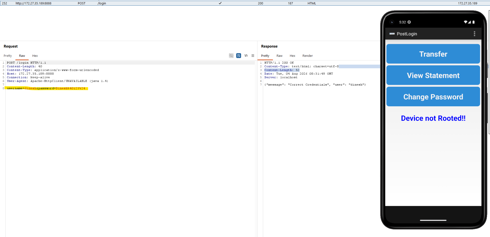
Checking Burp's HTTP history, we see those username and password credentials sent in cleartext. With no pinning in the way, reading is trivial.
Tampering. Go to Transfer and tap Get Accounts, which pulls the real
account numbers from the InsecureBankv2 database. Turn Intercept on in Burp Proxy, enter
an amount (50000), and hit Transfer. We send that captured request to Repeater, where we can
freely change anything - the account numbers or the amount. We change 50000 to
20000, hit Send, and:
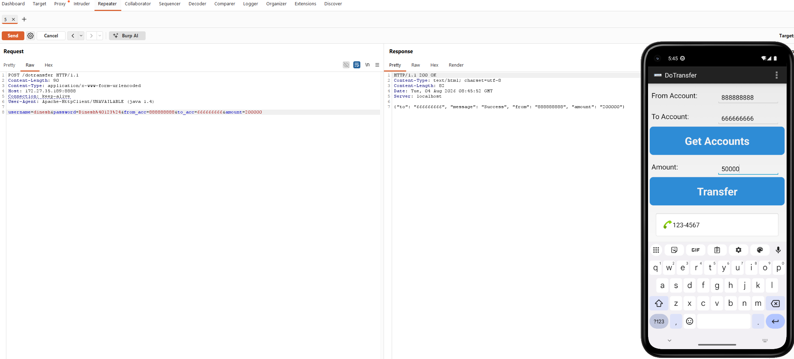
Despite the app originally sending 50000, the server accepted our tampered
20000 and reported the transfer as successful. The app trusts client-supplied values it
should be validating server-side.
Case 2 - When the user CA isn't trusted (NSC)
API 23 and below (Android 6 and older). These apps trust user certs by default, so we just install our CA and we're set.
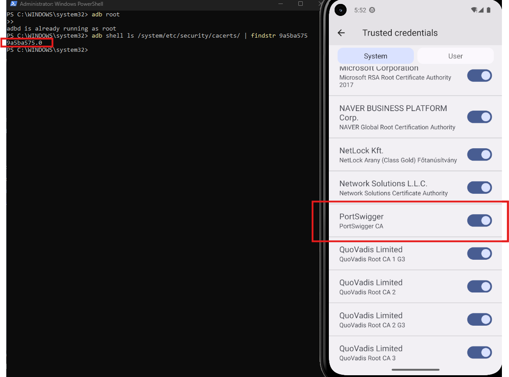
The picture above shows the certificate hash we placed in
/system/etc/security/cacerts/. On the right, the Android device shows that same PortSwigger
certificate we exported from Burp Suite, which makes us trusted to the app.
API 24 and above (Android 7+). These apps only trust the system CA store by default.
They ignore user-installed certs unless the app ships an NSC (Network Security Config) that explicitly
opts in with <certificates src="user"/>. Most apps do not opt in, because
trusting user certs is the insecure choice, so our exported Burp certificate is invisible to the app. In
that case we promote the CA into the system store (which needs root), and then app HTTPS
decrypts.
targetSdkVersion, not the
device's Android version. An app targeting API 23 still trusts user certs even on an Android 14 phone.
So when deciding "do I need Case 2," check the app's targetSdk, not just the OS.
Diagnosis flowchart:
- Browser decrypts too? No → the proxy is broken (a setup problem).
- Browser decrypts but the app doesn't, and pushing your CA to the system store fixes it → that was Case 2.
- App still blocks even with the CA in the system store → that is Case 3, pinning (a stronger check that ignores the trust store entirely).
Case 3 - Certificate pinning
A pinned app loads fine in the device browser, but in the app every HTTPS call fails with a generic "network error" / "can't connect," and Burp logs a TLS alert (handshake failure / unknown CA) instead of a decrypted flow. That asymmetry is the signature of pinning. (See the certificate pinning concept.) In Case 3, we have several methods for bypassing certificate pinning, listed below in order from easiest to most difficult:
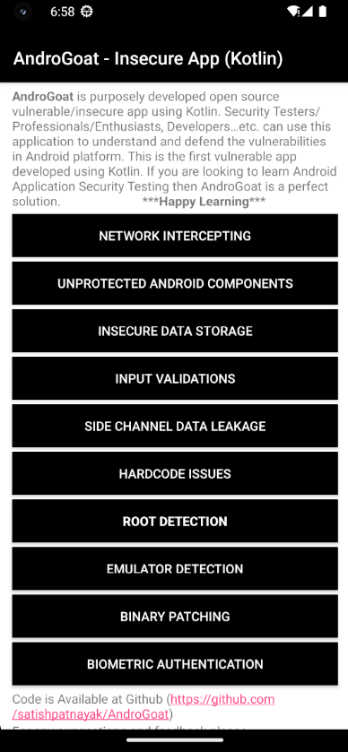
Bypass Option 1 - objection
Under Network Intercepting we see several options.
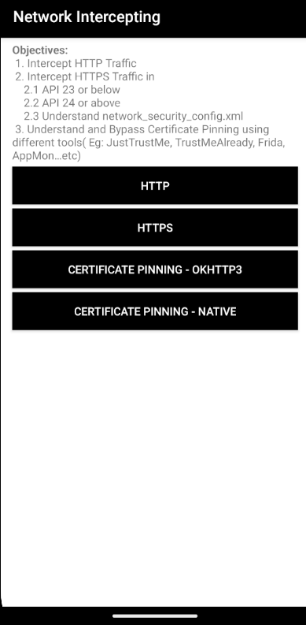
Let's choose Certificate Pinning - OkHttp3 and... nothing happens. Intercept is on in
Burp, but nothing shows up. When we tap HTTP and HTTPS we get responses from
demo.testfire.net and owasp.org, but nothing for either certificate pinning
button.
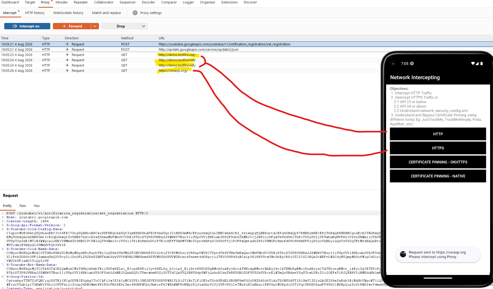
As we covered above, this is the classic sign that certificate pinning is working - which is perfect, because now we can try objection:
objection -g owasp.sat.agoat explore
# at the objection prompt:
android sslpinning disable(-g takes the package name; use the one you confirmed with pm list packages.)
Re-trigger the request in the app and it should now decrypt in the proxy.
Bypass Option 2 - Frida + frida-multiple-unpinning
Since objection's hook is generic
and may miss, the community CodeShare script frida-multiple-unpinning (by httptoolkit /
akabe1) hooks a long list of pinning APIs at once. It's a single-purpose script built for unpinning;
objection is a Swiss-army knife where unpinning is just one blade.
frida -U -f owasp.sat.agoat --codeshare akabe1/frida-multiple-unpinning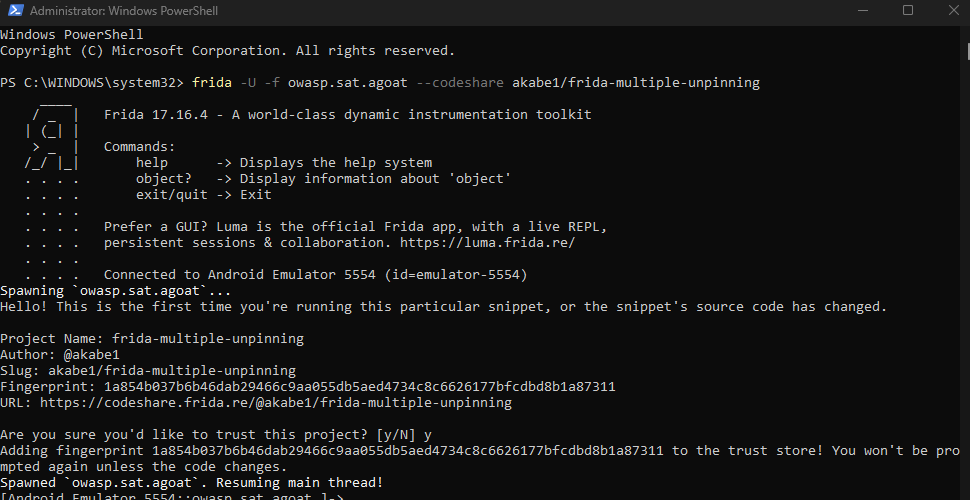
Back in AndroGoat, we try the same links again:
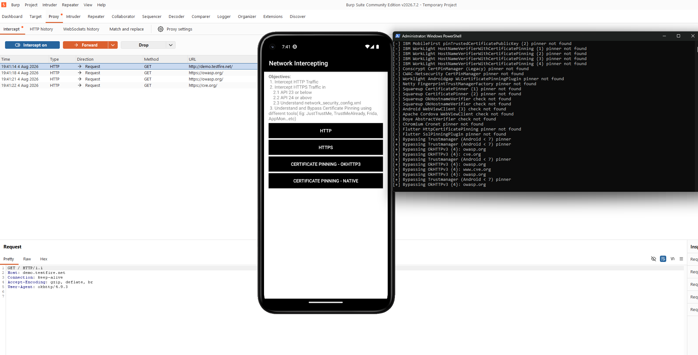
This time all four buttons - HTTP, HTTPS, and both
Certificate Pinning - OkHttp3 and Certificate Pinning - Native - show us the
decrypted HTTPS traffic.
Bypass Option 3 - hook the specific class
The generic scripts cover OkHttp, the
default TrustManager, and friends, but a custom or obfuscated implementation can slip past.
For this method we stop the Frida command from Option 2 and target the class directly. Back in
jadx, we look inside the code, identify the exact framework giving us trouble, and hook it
precisely. In any decompiled app, you hunt for the method that validates the server certificate and
throws on a mismatch.
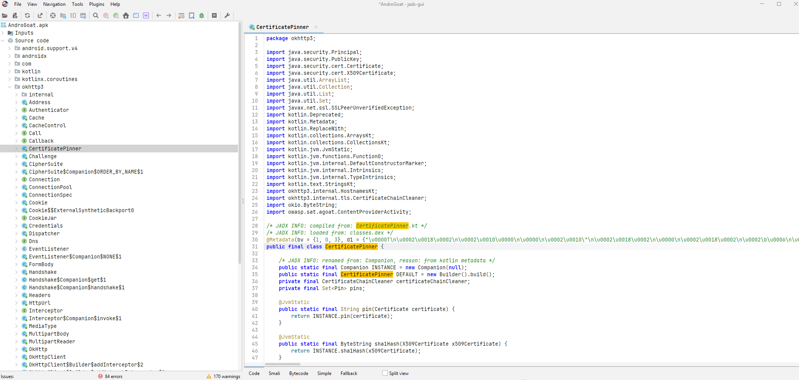
- Known class names:
CertificatePinner(OkHttp),X509TrustManager/TrustManager,HostnameVerifier,TrustKit, or the literal wordpinning. - Telltale method names:
check,checkServerTrusted,verify,checkTrusted. - The exception it throws:
SSLPeerUnverifiedExceptionorCertificateException. Find the method that throws one of those on a cert mismatch and we've found the pin.
For an OkHttp app like AndroGoat that method is okhttp3.CertificatePinner.check(); for a
custom implementation it's whatever class jadx reveals doing the same job. The method that throws is the
constant you search for, not the class name. We then neutralize it with a small Frida script that
replaces every overload of check() with a no-op:
Java.perform(function () {
var CertificatePinner = Java.use('okhttp3.CertificatePinner');
CertificatePinner.check.overloads.forEach(function (overload) {
overload.implementation = function () {
console.log('[+] okhttp3.CertificatePinner.check() bypassed');
return; // return without throwing = the pin passes
};
});
});Bypass Option 4 - Flutter (proxy fails even with no pinning)
Flutter apps bundle
their own TLS stack (BoringSSL inside libflutter.so) and ignore the system trust store, so
traffic won't proxy at all and route-via-proxy alone shows nothing. This looks like pinning, but
it's the runtime never consulting our CA. The bypass is to patch the native verify function:
reFlutter repackages the APK to route through our proxy and disable verification, or a
Frida script patches ssl_verify_cert_chain /
ssl_crypto_x509_session_verify_cert_chain in libflutter.so (by scanning for the
function's byte pattern) to force it to return success. This is an advanced technique we reach for only
once we confirm a Flutter target, so we'll cover it in depth later.
Finding an M5 flaw in an unexpected way in AllSafe
One AllSafe result deserves its own walk-through, because it looks like a setup fluke but is actually a vulnerability. AllSafe includes a Certificate Pinning challenge, so we point Burp at it.
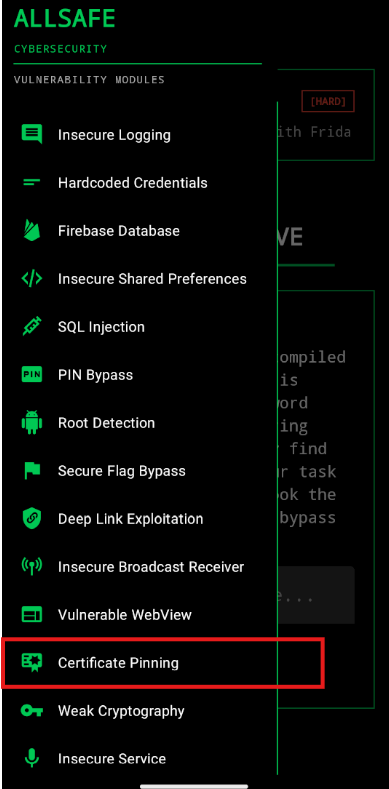
But something interesting happens the moment we tap "Send Request":
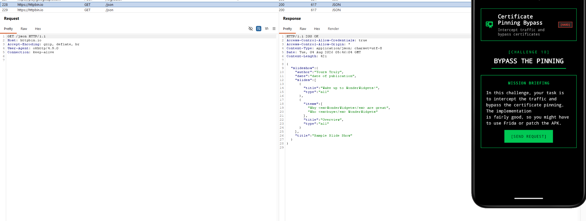
The HTTPS traffic is already decrypted and we can read it, which means no certificate pinning is effectively taking place. Have we somehow already bypassed it? Normally you would reach for a tool like Frida or objection to defeat pinning, but our set-up has already neutralized it. That is not luck - we may have found an even more severe M5 vulnerability.
So what happened? Let's read the challenge code at
infosecadventures.allsafe.challenges.CertificatePinning.
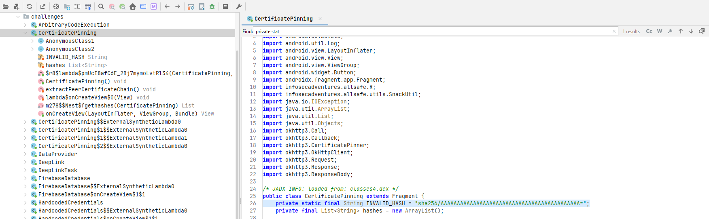
a) A pin that can never match. The class defines a deliberately invalid fingerprint:
private static final String INVALID_HASH = "sha256/AAAAAAAAAAAAAAAAAAAAAAAAAAAAAAAAAAAAAAAAAAA=";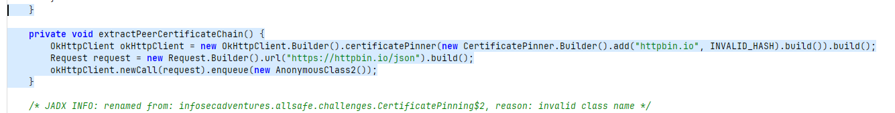
b) It fails a request on purpose to see the real cert. On screen load,
extractPeerCertificateChain() builds a client pinned to that invalid hash and fires a
request that is guaranteed to fail:
private void extractPeerCertificateChain() {
OkHttpClient okHttpClient = new OkHttpClient.Builder()
.certificatePinner(new CertificatePinner.Builder()
.add("httpbin.io", INVALID_HASH).build()) // a pin that can never match
.build();
Request request = new Request.Builder().url("https://httpbin.io/json").build();
okHttpClient.newCall(request).enqueue(new AnonymousClass2()); // fails on purpose
}c) It scrapes the real cert hashes out of the failure
(AnonymousClass2.onFailure). When a pin does not match, OkHttp throws an error whose message
lists the real peer-certificate fingerprints it just saw. The code reads them out of that text:
String[] lines = message.split(System.getProperty("line.separator"));
for (String line : lines) {
if (!line.trim().equals(INVALID_HASH) && line.trim().startsWith("sha256")) {
String pin = line.trim().split(":")[0].trim();
this.hashes.add(pin); // stores whatever cert was actually on the wire
}
}d) It pins to those harvested hashes (button handler,
lambda$onCreateView$0). When we tap the button, the "real" check is built from the
fingerprints it just collected:
CertificatePinner.Builder certificatePinner = new CertificatePinner.Builder();
for (String hash : this.hashes) {
certificatePinner.add("httpbin.io", hash); // pins to the cert it just observed
}
OkHttpClient okHttpClient = new OkHttpClient.Builder()
.certificatePinner(certificatePinner.build()).build();Why it auto-bypassed. A correct pin is a fixed fingerprint of the genuine server, compiled into the app, so any certificate that isn't the real server's fails. AllSafe never hardcodes one. Instead it snaps a fingerprint of whatever certificate is on the wire at connect time, then pins to that. With Burp trusted and in the middle, the certificate it observes is Burp's, so it harvests Burp's fingerprint and pins to Burp. When the real request runs, Burp's cert matches the Burp-derived pin, the check passes, and the traffic decrypts. Nothing to bypass - the control validates the man-in-the-middle against itself.
So what did we find in Traffic Interception & Cert Pinning?
The findings from this section, written up as report entries. Severities are calibrated to what each issue actually authorizes: a control that only helps an attacker who already owns the device isn't "critical," no matter how satisfying the bypass was.
| Title | Cleartext transmission of credentials (InsecureBankv2) |
|---|---|
| Severity | High. Credentials travel in the clear at login and on every transfer, so anyone on the network path reads them with no tooling and no pinning to defeat. |
| Description | InsecureBankv2 sends the username and password over the network without effective transport protection. They are readable in Burp's HTTP history at login and again in the body of every /dotransfer request. |
| Impact | A network attacker captures working credentials directly, with no MITM certificate trickery or pinning bypass required. |
| Evidence | The login POST and every /dotransfer body contain username=...&password=... in readable cleartext. |
| MASVS / CWE | MASVS-NETWORK-1 · MASTG "Testing Data Encryption on the Network" · CWE-319 |
| Mobile Top 10 | M5 - Insecure Communication |
| Remediation | Serve every endpoint over TLS; never transmit credentials in the clear; on Android set cleartextTrafficPermitted="false" in the Network Security Config. |
| Title | Server trusts client-supplied transfer parameters (InsecureBankv2) |
|---|---|
| Severity | High. Account numbers and amount are honored without server-side validation, so a tampered request moves money as instructed. |
| Description | The /dotransfer request carries from_acc, to_acc, and amount entirely from the client. Editing them in Repeater and replaying makes the server process the tampered values. |
| Impact | An attacker can change the amount and the source and destination accounts, enabling unauthorized transfers. |
| Evidence | The app sent amount=50000; a Repeater replay with amount=20000 returned a successful transfer for the tampered value. |
| MASVS / CWE | MASVS-CODE · CWE-602 (client-side enforcement of server-side security) |
| Mobile Top 10 | M4 - Insufficient Input/Output Validation |
| Remediation | Validate and authorize every transfer parameter server-side; bind the source account to the authenticated session; never trust a client-supplied amount or account. |
| Title | Ineffective certificate pinning, runtime-derived pin (AllSafe) |
|---|---|
| Severity | Low to Medium. Defense-in-depth: exploiting it still needs an on-path position plus a CA already trusted on the device, so it is not remotely exploitable on its own. |
| Description | The Certificate Pinning challenge derives its pins at runtime from the observed peer-certificate chain (it forces an OkHttp pin failure to harvest the real hashes, then pins to them) instead of using a fixed, build-time pin. |
| Impact | Because the pin is taken from whatever certificate is on the wire, a trusted MITM (our Burp CA) is pinned-to automatically. The control gives no assurance of server identity and adds nothing over default TLS; traffic decrypts with no Frida/objection bypass. |
| Evidence | infosecadventures.allsafe.challenges.CertificatePinning: extractPeerCertificateChain() pins to INVALID_HASH to force a failure, AnonymousClass2.onFailure scrapes the real hashes into hashes, and the button handler pins to those harvested values. |
| MASVS / MASTG | MASVS-NETWORK-2 · MASTG endpoint-identity / certificate-pinning tests |
| Mobile Top 10 | M5 - Insecure Communication |
| Remediation | Pin to a fixed, build-time value (the real server's leaf or CA public-key hash), with backup pins for rotation. Never derive the pin from the live connection. |
| Title | Certificate pinning bypassable via runtime instrumentation (AndroGoat) |
|---|---|
| Severity | Informational to Low. Pinning is correctly implemented and blocks a trusted proxy; defeating it needs a rooted device plus a Frida/objection hook, so it is not remotely exploitable. |
| Description | AndroGoat's OkHttp pinning enforces correctly - traffic blocks under our proxy while the browser still decrypts. On a rooted device we neutralized the pin at runtime with objection (android sslpinning disable), frida-multiple-unpinning, and a targeted CertificatePinner.check() hook. |
| Impact | On a device the attacker fully controls, client-side pinning does not prevent traffic inspection. This is an inherent limit of client-side controls, not a flaw unique to AndroGoat. |
| Evidence | The pinning requests returned nothing until a Frida unpinning hook was attached, after which they decrypted in Burp's HTTP history. |
| MASVS / MASTG | MASVS-NETWORK-2 (endpoint identity) · MASVS-RESILIENCE (anti-tampering) · MASTG certificate-pinning tests |
| Mobile Top 10 | M5 - Insecure Communication (with an M7 resilience angle) |
| Remediation | Keep pinning as defense-in-depth, but layer additional protections (root/tamper detection, attestation). Do not rely on client-side pinning alone as a security boundary. |
Remediation
The fixes for what we found on the wire, then the general controls for M5.
For the flaws in this section:
- Cleartext credentials (InsecureBankv2): serve every endpoint over TLS and never transmit credentials in the clear. On Android, set
cleartextTrafficPermitted="false"in the Network Security Config so the platform refuses plain HTTP. - Server trusts client-supplied transfer parameters: validate and authorize every parameter server-side, and bind the source account to the authenticated session. Never trust a client-supplied amount or account number.
- Ineffective, runtime-derived pinning (AllSafe): pin to a fixed, build-time value (the real server's leaf or CA public-key hash) with backup pins for rotation. Never derive the pin from the live connection.
- Pinning bypassable on a rooted device (AndroGoat): keep pinning as defense-in-depth, but layer additional protections (root/tamper detection, attestation). Don't rely on client-side pinning alone as a security boundary.
General M5 (Insecure Communication) controls, most important first:
- Most applicable here: enforce TLS on every endpoint and set
cleartextTrafficPermitted="false"; never send credentials or tokens in cleartext. - Pin to a fixed public-key hash with backup pins, and treat pinning as one layer rather than the boundary.
- Validate and authorize all requests server-side; the client is attacker-controlled, so nothing it sends can be trusted.
03Insecure Data Storage
Concept
As we know, each app runs as its own user within its own private directory, and other apps cannot read its files. A lot of developers believe that, due to the nature of the sandbox, they can just store their token in a file. While the sandbox DOES defend against a malicious app reading a victim app's data at runtime, it does nothing against an attacker who has the device itself.
- Root - allows us to step outside the sandbox and read any app's private files directly.
- A backup (
adb backup, or an iTunes/Finder backup) can pull data off a non-rooted device if the app allows backup.
We can't recover data that an app never wrote, so our workflow is always:
- Drive the app so it stores something.
- Go and read the sandbox.
Checking for insecure storage with AllSafe
First let's navigate to the Insecure Shared Preferences challenge in the AllSafe app.
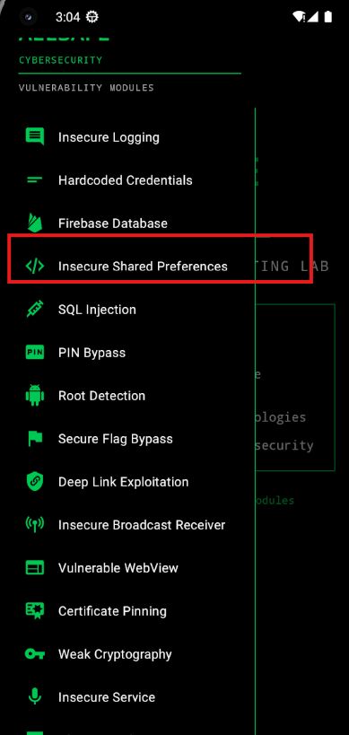
Let's enter some random credentials and click Store Credentials. Now that our credentials are written into the app, let's see if we can find them.
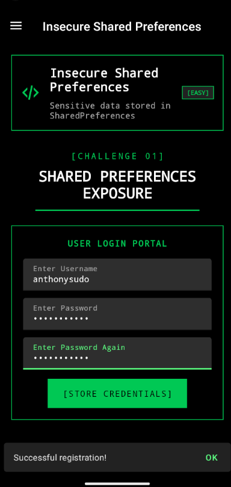
SharedPreferences (/shared_prefs/*.xml). Let's drop into a
shell on our Pixel 5 device and navigate to the
infosecadventures package. We can check our shared_prefs
here and search for everything that is an XML file.
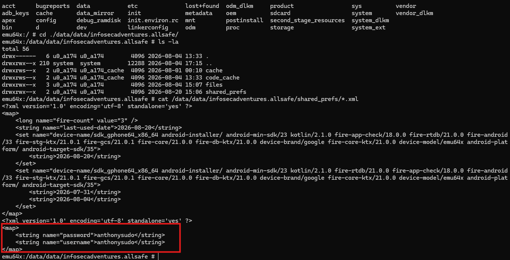
user.xml.This shows that the app wrote it straight as plaintext XML without any encryption or Keystore. This is a pretty clear-cut example of sensitive data stored unencrypted on a device.
We can grep the entire sandbox for any potential secrets.
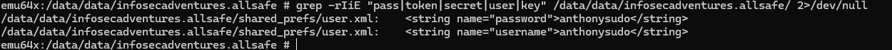
We can see the same credentials we entered earlier.
What I also checked besides SharedPreferences
After checking the other files and folders, we don't see much else, but it's always good to enumerate as much as we can. The above is just one example of how we can sniff for secrets.
We can also check the sdcard.
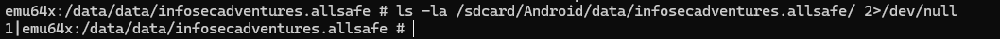
The reason we check the sdcard is that everything inside /data/data/<pkg> is inside
the app sandbox, so reading it needs root, a backup, or forensic access. External storage is NOT in the
sandbox (usually it's world-readable to any app with storage perms, it survives when the app is
uninstalled, and a plugged-in PC can read it without root at all). So when we are writing our report, our
plaintext password is Low to Medium inside /data/data, but it goes to
Medium to High on /sdcard/. We need to check this location because it is the
worst-case location for insecure data to be. Noting its emptiness is essential to our report.
We can also confirm the app never used the correct vault. Running
objection's android keystore list returns nothing - the
app stored its secret in a plaintext file instead of the Android
Keystore.
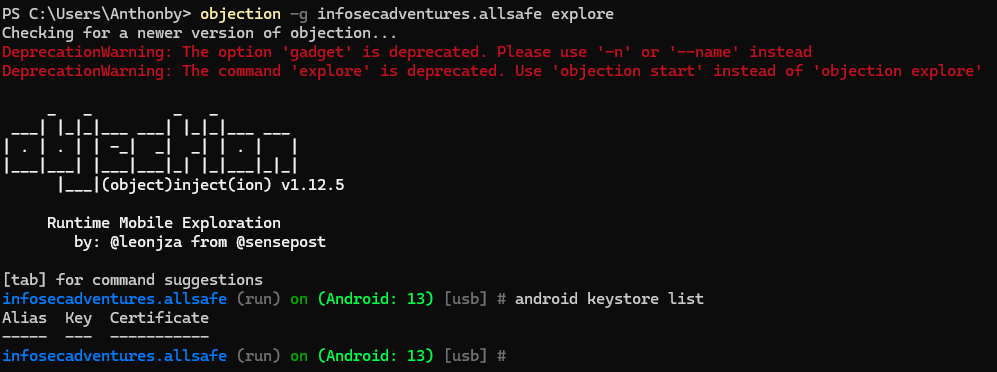
What to check every time - the storage checklist
The full set of places sensitive data can come to rest on a device, why each one matters, and what this pass turned up for AllSafe. Reachability drives severity: the same secret is worse the easier it is to reach.
| Location | Where | Why we check it | What I saw |
|---|---|---|---|
| SharedPreferences | shared_prefs/*.xml | The number-one dumping ground for plaintext credentials, tokens, and flags. | user.xml held the credentials in plaintext - the finding. |
| SQLite databases | databases/*.db (+ -wal, -journal) | Structured data; journal and WAL files often still hold "deleted" rows. | No databases/ directory present. |
| Internal files | files/ | Arbitrary app files; modern apps use MMKV or DataStore binary blobs (run strings on them). | Only benign artifacts (a ProfileInstaller marker and an empty docs/). |
| External storage | /sdcard/, /sdcard/Android/data/<pkg>/ | Reachable with no root, so anything sensitive here is higher severity. | Empty. |
| Cache | cache/, code_cache/ | Temp data, but sensitive API responses sometimes linger. | Empty. |
| logcat | adb logcat | Apps log tokens, URIs, or PII to a buffer that is readable over adb. | Clean - credentials were not written to the log. |
| Keystore | android keystore list (objection) | The correct vault; an empty result proves the app skipped it. | Empty - the app never used the vault. |
| grep sweep | grep -rIiE "pass|token|secret|key" | Catch-all so you don't miss a file by eyeballing the tree. | Surfaced only user.xml. |
| Recents snapshot | /data/system_ce/0/snapshots/ | The OS caches a thumbnail of the last screen; a sensitive screen leaks unless FLAG_SECURE is set. | Not exercised this pass. |
| Clipboard | system clipboard | "Copy secret" buttons leave data any other app can read. | Not exercised this pass. |
| Keyboard cache | IME learned-words store | Sensitive strings typed into non-password fields get learned by the keyboard. | Not exercised this pass. |
So what did we find in Insecure Data Storage?
One finding, written up as a report entry. The severity is calibrated to what recovering the data actually takes: data that only an attacker who already controls the device can reach isn't "critical."
| Title | Sensitive credentials stored in plaintext SharedPreferences (AllSafe) |
|---|---|
| Severity | Low to Medium. The credentials sit in the app sandbox at /data/data/<pkg>/shared_prefs/user.xml, so reading them needs root, a backup, or forensic access to the device - not remotely exploitable. The same data on external storage (/sdcard/) would raise this to Medium to High, since /sdcard is reachable with no root; here it was empty. |
| Description | AllSafe's Insecure Shared Preferences challenge writes the username and password to shared_prefs/user.xml as plaintext key/value XML, with no encryption and without using the Android Keystore. |
| Impact | An attacker with root, a backup, or forensic access to the device recovers the stored credentials directly from the file. |
| Evidence | After storing credentials in the challenge, user.xml contained the username and password as cleartext <string> values; a recursive grep of the sandbox surfaced the same values and nothing else. |
| MASVS / MASTG | MASVS-STORAGE-1 · MASTG "Testing Local Storage for Sensitive Data" · CWE-312 |
| Mobile Top 10 | M9 - Insecure Data Storage |
| Remediation | Avoid storing credentials on the device where possible; if you must, use EncryptedSharedPreferences backed by an Android Keystore master key, so the file on disk is ciphertext and the key never leaves secure hardware. |
Remediation
The fix for what we found on disk, then the general controls for M9.
For the flaw in this section:
- Plaintext credentials in SharedPreferences (AllSafe): don't store credentials on the device if you can avoid it. If you must, use EncryptedSharedPreferences backed by an Android Keystore master key so the file on disk is ciphertext and the key never leaves secure hardware. Keep sensitive data off external storage, and set
allowBackup="false"so it can't be pulled from a backup.
General M9 (Insecure Data Storage) controls, most important first:
- Most applicable here: store sensitive data only in the OS-backed vault (Keystore-backed EncryptedSharedPreferences on Android, Keychain on iOS), never as plaintext in
shared_prefs. - Keep sensitive data off external storage (
/sdcard/) - it is world-reachable, survives uninstall, and needs no root to read. - Disable backups for apps holding sensitive data, and scrub caches and the Recents screenshot (
FLAG_SECURE) where secrets could linger.
04Broken Cryptography
Concept
In the previous section, we covered how we found some files in plaintext off disk. Now we are going to focus on files that are encrypted. Developers reach for a crypto API, accidentally configure it incorrectly or miss a vulnerability, and ship something that looks encrypted, but when we look closely we realize it isn't. We will essentially just read the code, find the key, and decrypt the "encrypted" blob offline. Let's use AndroGoat for this section, which focuses on MASVS-CRYPTO, OWASP Mobile Top 10 M10 - Insufficient Cryptography. Along with AndroGoat we will open up jadx and have objection ready.
We have to keep in mind: if the key sits next to the ciphertext, then it isn't encryption. It's just obfuscation with some ribbons. Let's find the key from the decompiled code, the same way we did in the Recon & Static Analysis section.
Below are the things we usually look for in regards to Broken Cryptography:
| Mistake | Why it's broken |
|---|---|
| Hardcoded key | The key is baked into the binary as a string or byte array. Anyone who decompiles the app gets it. The "secret" is shipped to every attacker. |
| ECB mode | Each block is encrypted independently, so identical plaintext blocks produce identical ciphertext blocks. Structure leaks straight through - patterns survive encryption. |
| Static / null IV | A fixed initialization vector (often all-zero bytes) reused for every encryption. Removes the randomness CBC/CTR rely on; identical plaintexts encrypt identically and the scheme becomes deterministic. |
| Weak algorithms | DES / 3DES (56-bit), RC4, MD5, SHA-1. Broken or far too small. MD5/SHA-1 for password hashing or "integrity" is a finding on its own. |
| Home-rolled crypto | XOR with a repeating key, custom byte-shuffles, "encryption" someone invented. Always breakable; never trust a scheme that isn't a vetted standard. |
| Base64 ≠ encryption | Base64 is encoding, not encryption. dGVzdA== is reversible by anyone. Surprisingly common as a fake "encrypt this token" step. |
| Predictable salt / no salt | A constant salt (or none) lets attackers precompute and reuse rainbow tables across all users. |
| Bad randomness | java.util.Random is not cryptographically secure - its output is predictable from a few samples. Keys, IVs, salts, and tokens must come from SecureRandom (Android) or SecRandomCopyBytes (iOS). |
Finding the crypto in jadx
Let's open AndroGoat.apk in jadx. There are a few telltale
crypto APIs we can use for our searching:
jadx -d androgoat-src androgoat.apk # dump decompiled sources to a folder
findstr /s /i "Cipher.getInstance" androgoat-src\* # mode + padding live here
findstr /s /i "SecretKeySpec" androgoat-src\* # the key bytes
findstr /s /i "IvParameterSpec" androgoat-src\* # the IV (watch for constants)
findstr /s /i "MessageDigest" androgoat-src\* # MD5 / SHA-1 usage
findstr /s /i "DES RC4 ECB MD5 SHA1" androgoat-src\* # weak primitives
findstr /s /i "java.util.Random" androgoat-src\* # insecure randomnessLet's use jadx first, and then we can compare it to searching in PowerShell.
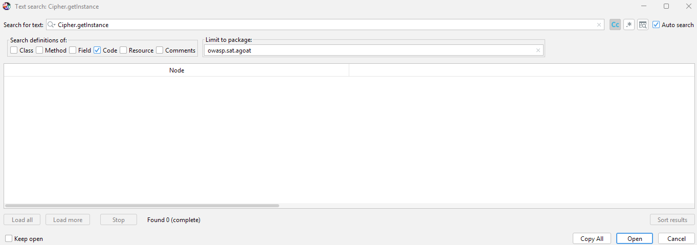
Cipher.getInstance.Nothing is showing for Cipher.getInstance, so let's look for any SecretKeys.
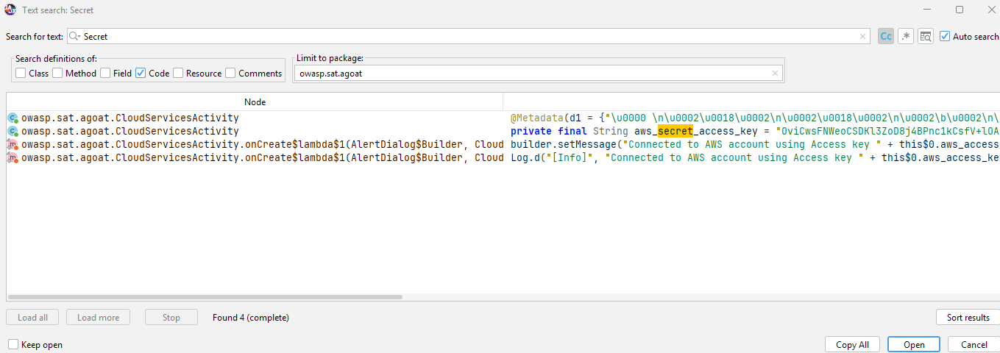
SecretKeySpec.While we did find something, this is a credential, which would fall under M1 - Improper Credential Usage. We will cover this later, so stay tuned!
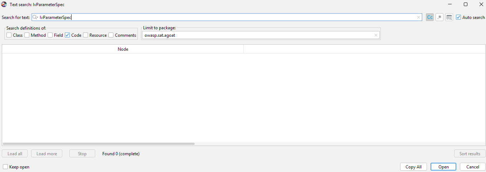
IvParameterSpec showed nothing either, so let's continue.
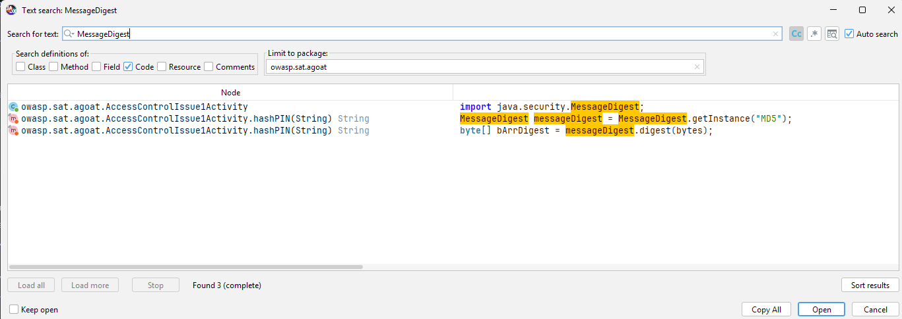
MessageDigest search - the second hit mentions hashPIN and MD5.Ok this is interesting. Notice in the second finding we see some keywords like hashPIN and
MD5. Let's go look at this code closer.
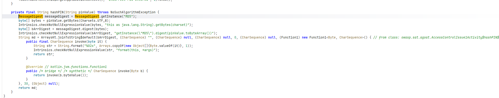
hashPIN function.We see in the code hashPIN, which is a function. So let's find its caller.
This is where hashPIN runs and what its result gets compared against. That comparison target
is the hash we want to crack!
hashPIN and select Find Usage to see exactly where it's
being called.
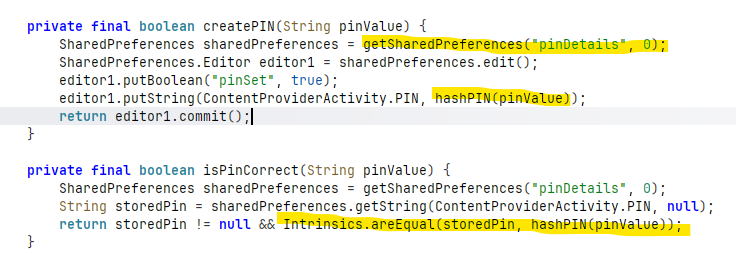
hashPIN is called.Scrolling up a bit, we see this bit of code and an interesting part mentioning
SharedPreferences. Within SharedPreferences is "pinDetails".
createPIN- hashes the PIN and stores it.isPinCorrect- hashes the entered PIN and compares it to the stored one.
isPinCorrect is the important one for our exploit, because this is where the
comparison happens. Where does it compare from? It compares against storedPin,
which came from SharedPreferences.
Running the exploit
By the way, you may have noticed that in AndroGoat there isn't a challenge called Cryptography or something like that, so how do we know which one to use? Well, since we found the name of the activity in the code, we can just run it and it will open on our virtual smartphone:
adb shell am start -n owasp.sat.agoat/.AccessControlIssue1Activity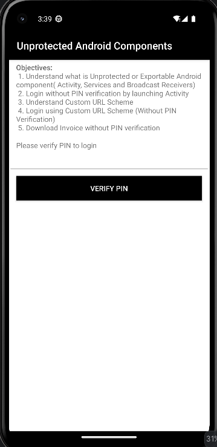
am start.Step 1: We need to make the app store a hash, so let's enter a PIN. And funny enough, I believe I accidentally set a PIN in the app while I was navigating between the app's pages, so I actually do NOT know the PIN. So we're now in a perfect scenario, as if we were an attacker: we have the hash, but we don't know the PIN!
Step 2: Let's remember that jadx is only reading STATIC code. Since we entered a PIN, it
was updated live, so we need to use our PowerShell (or equivalent) to read within pinDetails.xml,
which - from what we saw in the code - is where our PIN is stored.
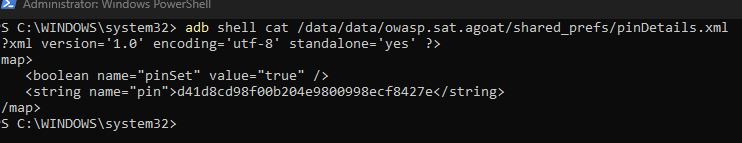
pinDetails.xml.And we got something - we have a string!
d41d8cd98f00b204e9800998ecf8427e
And want to know the funny thing? This is the MD5 hash for the string of "". Yup, I
accidentally set the PIN as... nothing. So upon entering nothing, we're "logged" into a page where we can
"Download Invoice".
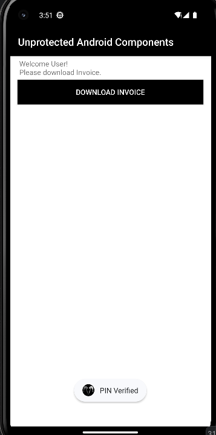
While funny, it is a bit disappointing. So for the purpose of learning, let's reset the app and set a
new PIN as 1337.
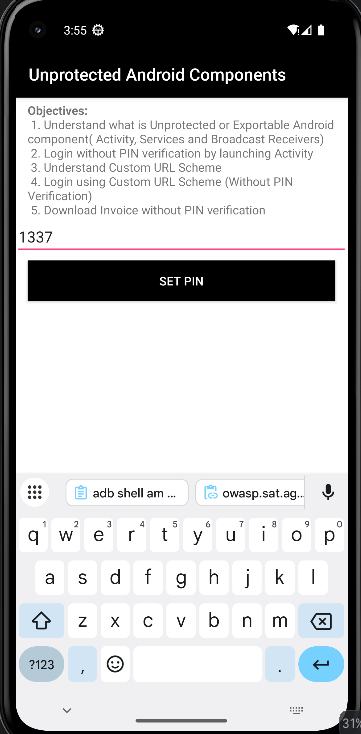
Now, we look it up in pinDetails.xml again.
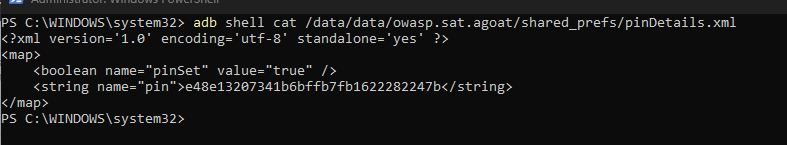
pinDetails.xml.e48e13207341b6bffb7fb1622282247b
Now that we have our string, let's decode it.
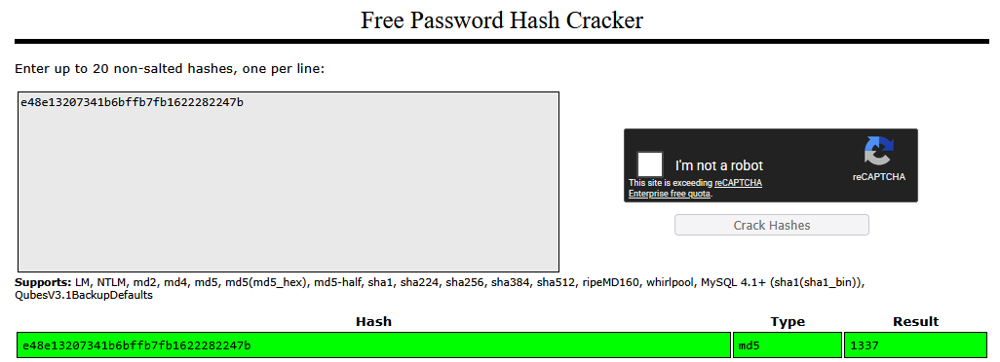
I used an online hash cracker for this, but of course, if this were an actual job for a client, then we would preferably crack this offline with our own software or program, since it is sensitive information.
So what did we find in Broken Cryptography?
One finding, written up as a report entry. The severity is calibrated to what the weak hashing actually exposes.
| Title | Weak, unsalted hashing of the access-control PIN (AndroGoat) |
|---|---|
| Severity | Medium. The PIN is protected only by fast, unsalted MD5 over a tiny numeric keyspace, so anyone who obtains the stored hash recovers the PIN offline in seconds - either from a public rainbow table or by brute-forcing the whole keyspace. Reading the hash needs access to the app sandbox (root, a backup, or forensic access), so it isn't remotely exploitable on its own, but the cryptographic control provides effectively no protection once that hash is in hand. |
| Description | The access-control PIN is hashed with MD5 - a fast, broken hash - with no salt, and stored in shared_prefs/pinDetails.xml. Verification is also performed client-side: isPinCorrect() compares the entered PIN's MD5 against the stored value. |
| Impact | An attacker who reads the stored hash recovers the PIN offline almost instantly, defeating the PIN gate protecting the invoice screen. Because the check is client-side, a rooted attacker could also bypass it directly by editing the stored value or hooking the comparison. |
| Evidence | hashPIN() in owasp.sat.agoat.AccessControlIssue1Activity calls MessageDigest.getInstance("MD5") with no salt and stores the digest in pinDetails.xml. A pulled hash resolved back to the set PIN offline in seconds. |
| MASVS / MASTG | MASVS-CRYPTO-1 · MASTG weak-hashing / algorithm-configuration tests · CWE-916 (weak password hash) · CWE-759 (one-way hash without salt) · CWE-327 (broken/risky crypto algorithm) |
| Mobile Top 10 | M10 - Insufficient Cryptography |
| Remediation | Don't protect a low-entropy secret like a PIN with a fast, unsalted hash. Use a slow, salted password KDF (PBKDF2, scrypt, or Argon2) with a random per-user salt; better still, store the secret in the Android Keystore behind user authentication. Drop MD5/SHA-1 entirely, and enforce the check server-side rather than relying on a client-side comparison. |
Remediation
The fix for the weak hashing we found, then the general controls for M10.
For the flaw in this section:
- Unsalted MD5 hashing of the PIN (AndroGoat): don't protect a low-entropy secret with a fast, unsalted hash. Use a slow, salted password KDF (PBKDF2, scrypt, or Argon2) with a random per-user salt; better still, store the secret in the Android Keystore behind user authentication. Drop MD5/SHA-1 entirely, and enforce the check server-side rather than trusting a client-side comparison.
General M10 (Insufficient Cryptography) controls, most important first:
- Most applicable here: use vetted algorithms correctly - a proper salted KDF (Argon2/scrypt/PBKDF2) for secrets, SHA-256 or better for hashing, and AES-GCM (never ECB) with a random IV per operation. Never MD5/SHA-1 for anything security-relevant.
- No hardcoded keys - generate and keep keys in the Keystore/Keychain so the raw key never exists in the binary or address space.
- Use
SecureRandomfor keys, IVs, salts, and tokens; neverjava.util.Random.
05Authentication & Session
Concept
An app asks itself, "is this user allowed?". It then has a PIN screen, a fingerprint gate, an
isLoggedIn boolean, and using those things it trusts its own answer. But on a device WE
control, every one of those checks is just code we can rewrite at runtime. In this section we will force
those checks to lie, then look at the other half of the problem: the tokens that do reach
the server, and whether they're minted, stored, rotated, and expired correctly.
This section focuses on MASVS-AUTH (Authentication and Session Management) and the OWASP Mobile Top 10 categories M1 - Improper Credential Usage and M3 - Insecure Authentication/Authorization. Our targets:
- AndroGoat - for the biometric authentication challenge (M3).
- InsecureBankv2 - for insecurely stored and hardcoded credentials (M1).
We will also use Frida and objection.
alg:none, a weak signing secret, no expiry, no server-side revocation on logout).
Remotely exploitable, so usually higher. This section demonstrates Family A (the biometric bypass)
alongside the M1 credential-handling failures.
M3 - Insecure Authentication/Authorization (AndroGoat)
Enrolling a fingerprint. For the Biometric Auth challenge we first need to enroll a fingerprint on the emulator. Since we obviously can't use a real fingerprint, we run this command from our host about six times to get it to confirm in the Android settings:
adb emu finger touch 1This makes the device think finger 1 is enrolled. (We will bypass this anyway, but the app
needs an enrolled print to reach the prompt.)
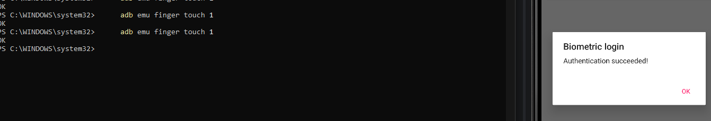
Identifying the exploit. Let's open AndroGoat's Biometric Authentication challenge.
So we confirm the app works using the legitimate path. Now let's try to reach the same screen
without a valid fingerprint. To see if we can, let's use jadx
and open AndroGoat's code again. Android / AndroidX use BiometricPrompt and
onAuthenticationSucceeded for biometric authentication; the platform calls these for the app
to use. Searching BiometricPrompt in the app leads us to the BioMetricAuthActivity
code for the challenge.
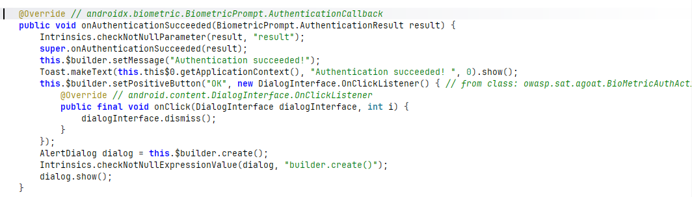
We see in this screenshot what happens on successful authentication:
setMessage("Authentication succeeded!")Toast.makeText(..., "Authentication succeeded! ")setPositiveButton("OK", ... dismiss)AlertDialog dialog = builder.create(); dialog.show();
Notice something? This is all cosmetic. There is no result.getCryptoObject(), no
Cipher, no Keystore key in that success path. It builds a
Toast and an AlertDialog and stops. It essentially says, "on success, generate a good-job pop-up!"
However, Android calls that on a real fingerprint, so we can't trigger it directly. But the app also
wrote onAuthenticationFailed (which happens on a wrong fingerprint) and
onAuthenticationError (which happens if we tap "Cancel"). These two we CAN trigger ourselves.
So when the app tries to run the "failed" or "cancel" code, we hijack it with Frida and make it run the
"success" code instead.
Exploiting the vulnerability.
Step 1 - identify the exact targets we'll hook, from jadx:
- class
owasp.sat.agoat.BioMetricAuthActivity$onCreate$1 - methods
onAuthenticationSucceeded,onAuthenticationFailed,onAuthenticationError
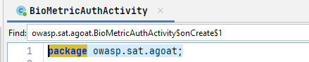
owasp.sat.agoat . BioMetricAuthActivity $ onCreate $ 1
<-- package --> <-- outer class --> <- nested ->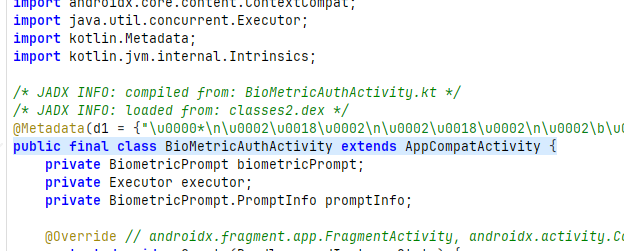
public final class BioMetricAuthActivity extends AppCompatActivity {This is the outer class - the top-level declaration.
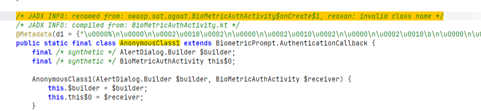
And finally we have the inner class. jadx relabelled it to AnonymousClass1, but the real
runtime name is in the renamed from: comment: ...BioMetricAuthActivity$onCreate$1.
The $onCreate$1 means "the 1st anonymous class declared inside the onCreate
method" - that's the name the compiler generated and the name the JVM actually uses. So Frida needs the
real name when we hook.
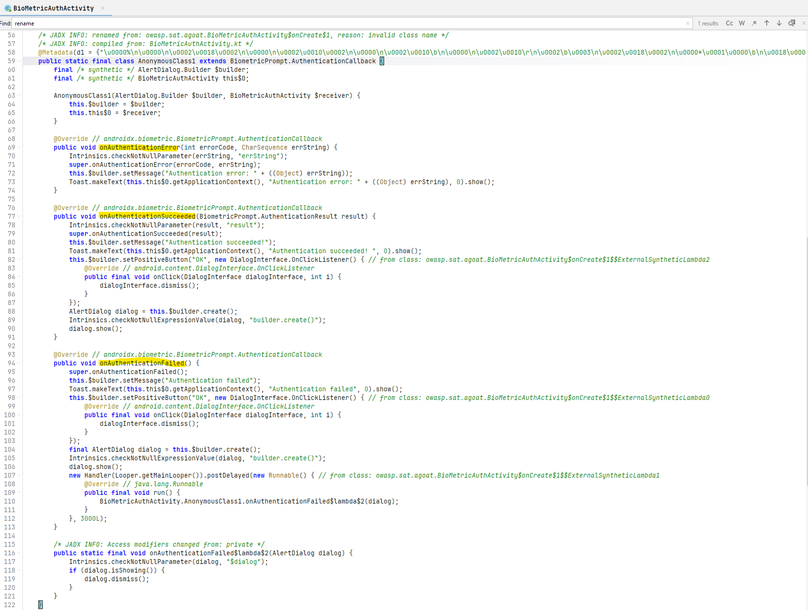
As for the methods, we found those because they sit within the inner class's braces (the braces are highlighted, and the methods are highlighted in yellow).
Step 2 - decide the reroute. We make onAuthenticationFailed and
onAuthenticationError call onAuthenticationSucceeded. We hijack the two paths we
control and point them at the success code.
Step 3 - write the hook:
Java.perform(function () {
// (A) neutralize Kotlin's null-check so we can pass null
Java.use('kotlin.jvm.internal.Intrinsics')
.checkNotNullParameter.overload('java.lang.Object', 'java.lang.String')
.implementation = function (obj, name) {};
// (B) handle to the callback class
var Callback = Java.use('owasp.sat.agoat.BioMetricAuthActivity$onCreate$1');
// (C) reroute the paths WE can trigger into the success path
Callback.onAuthenticationFailed.implementation = function () {
console.log('[+] failed -> forcing success');
this.onAuthenticationSucceeded(null);
};
Callback.onAuthenticationError.implementation = function (code, msg) {
console.log('[+] error/cancel -> forcing success');
this.onAuthenticationSucceeded(null);
};
});What and why for each piece:
Java.perform(function(){ ... })- run our code once the Android Java runtime is up. The app is Java/Kotlin on a VM, so Frida has to wait for that VM before it can touch classes.Java.use('...class...')- get a handle to a class. We need a reference before we can rewrite its methods.Method.implementation = function(){ ... }- replace what the method does. This is the actual override; our code runs instead of the app's.this.onAuthenticationSucceeded(null)inside the failed/error hooks - run the success path. That's the reroute;nullbecause we have no real result and the method never uses it anyway.- The
Intrinsics.checkNotNullParameterno-op - Kotlin auto-inserts a runtime null-check onresult; passingnullwould throw, so we blank that one check out. A pure Kotlin gotcha, not the concept.
Step 4 - save the script to a file, because frida -l loads a script from a path on disk.
Step 5 - make sure the app is running and on the target screen. Open AndroGoat's Biometric Authentication challenge and tap Biometric Authentication, which brings up the fingerprint prompt (and loads the class we need to hook).
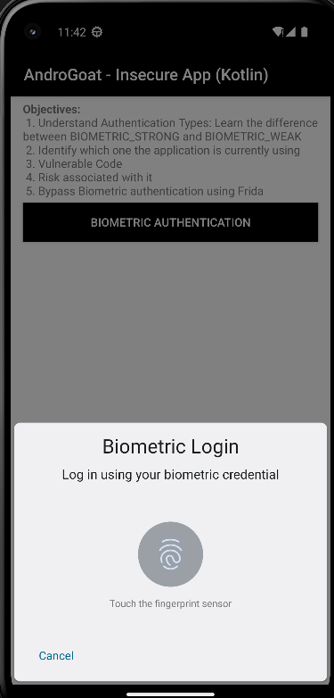
Step 6 - find the process ID:
frida-ps -U | findstr /i "andro"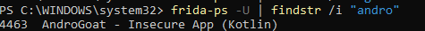
Step 7 - attach with the script we made earlier:
frida -U <PID> -l $env:USERPROFILE\biometric-bypass.js-U = the USB/emulator device; -l = load and inject our script. We attach to the
running process rather than spawning a fresh one, because the callback class only loads once the
biometric screen is open.
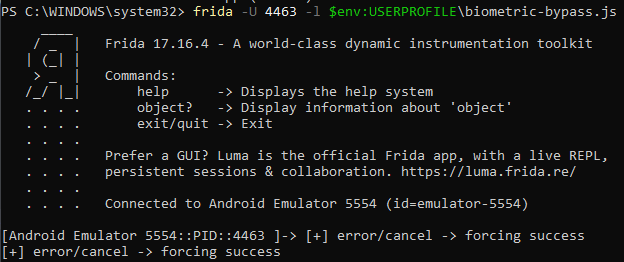
Step 8 - trigger it. Hit Cancel on the fingerprint screen and...
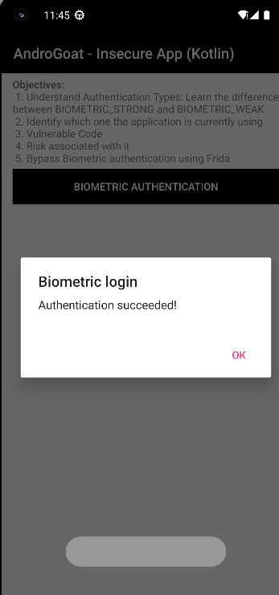
Success! We hit Cancel, but the app still authenticated. The gate was a suggestion.
M1 - Improper Credential Usage (InsecureBankv2)
This is about credentials specifically - the things that prove our identity: passwords, API keys, session tokens, and secrets. A credential can be mishandled anywhere it lives:
- Stored insecurely on the device (InsecureBankv2's cached login, which we cover first).
- Hardcoded into the binary (like the AWS key we found earlier, which we cover shortly).
- Transmitted insecurely (cleartext over the wire, such as what we saw in Chapter 3 / M5).
- Validated weakly, or reused and never rotated.
A lot of the time, the thing that authenticates is handled carelessly wherever it lives.
Identifying the vulnerability. InsecureBankv2 is purposefully vulnerable for learning.
It has a login and a "remember me" style credential cache. We first check
shared_prefs, because that's the number-one place credentials go when
they're cached for future logins. Since we logged in previously with dinesh /
Dinesh@123$ back in Chapter 3, if cached, they should still be there.
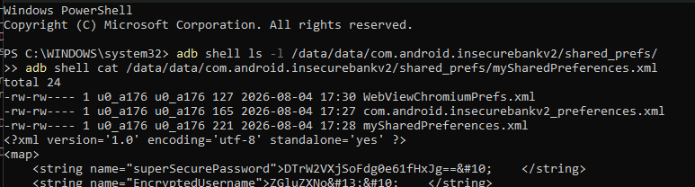
We see two strings, superSecurePassword and EncryptedUsername. We'll be the
judge of how "encrypted" and "super secure" these are. Let's decode them both from Base64.
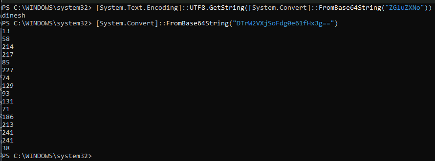
The username decoded to a readable word - dinesh. So it was only Base64; no key was
needed. The password decoded into 16 random bytes, so it IS actually encrypted (AES ciphertext). The
decode alone failed, which means we need to find a key, similar to what we did in the Broken Cryptography
section. It's always good to try the cheapest attack first before chasing rabbits:
Check storage → Decode → Escalate to key recovery.
So let's pull the APK, open jadx, search for Crypto /
Cipher.getInstance, and use our skills to find the key.
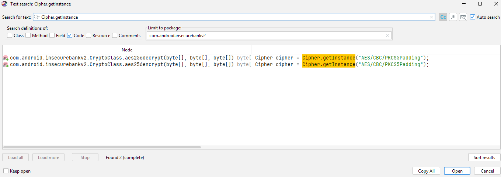
Looks like we found something. Let's take a closer peek.
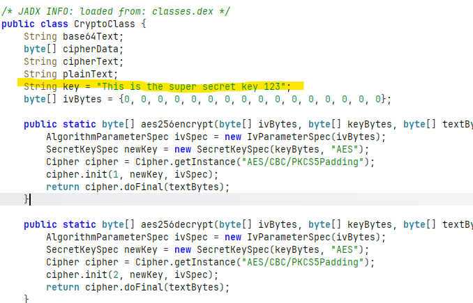
A "super secret key" for a "super secure password," eh? Everything needed to reverse it is right there:
- Algorithm:
Cipher.getInstance("AES/CBC/PKCS5Padding")- AES-256, CBC mode. - Key:
"This is the super secret key 123"- 32 characters, which is 256 bits, confirming AES-256. - IV:
ivBytes = {0,0,0,...}- 16 zero bytes, a static all-zero IV.
This reveals a lot of important information:
- There is a hardcoded key baked into the APK (M10 hardcoded key). It ships to every attacker.
- A static / all-zero IV (M10 static IV) - the exact "Static / null IV" scenario we noted in the Chapter 5 table.
- So the "superSecurePassword" AES layer provides no real protection - the key that "protects" it is inside the very app we pulled.
Exploiting it. We have our Base64 string (DTrW2VXjSoFdg0e61fHxJg==) pulled
from shared_prefs, and we want the plaintext password. We look at the methods in the code and find which
one is most applicable given our input (the string) and desired output (the plaintext password).
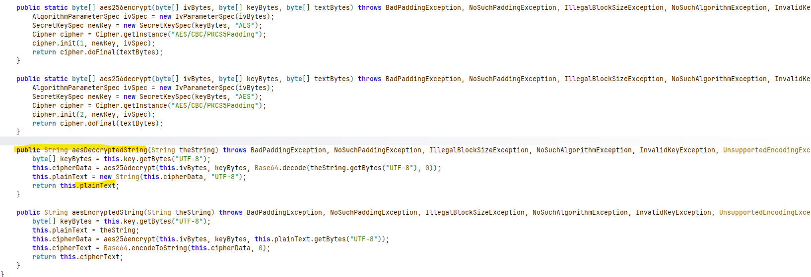
| Method | Takes | Returns | Fits our problem? |
|---|---|---|---|
aes256encrypt(...) | raw bytes | ciphertext bytes | No. It encrypts. |
aes256decrypt(...) | raw bytes | plaintext bytes | Partly - decrypts, but wants raw bytes, not a Base64 string. |
aesEncryptedString(String) | plaintext | Base64 ciphertext | No. It encrypts. |
aesDeccryptedString(String) | a String | plaintext String | Yes. Takes a string, returns the password. |
So we take the recipe from aesDeccryptedString and rewrite it in PowerShell (locally, so no
sensitive data leaves our machine):
$key = [System.Text.Encoding]::UTF8.GetBytes("This is the super secret key 123")
$iv = New-Object byte[] 16
$ct = [System.Convert]::FromBase64String("DTrW2VXjSoFdg0e61fHxJg==")
$aes = [System.Security.Cryptography.Aes]::Create()
$aes.Key = $key
$aes.IV = $iv
$aes.Mode = [System.Security.Cryptography.CipherMode]::CBC
$aes.Padding = [System.Security.Cryptography.PaddingMode]::PKCS7
$pt = $aes.CreateDecryptor().TransformFinalBlock($ct, 0, $ct.Length)
[System.Text.Encoding]::UTF8.GetString($pt)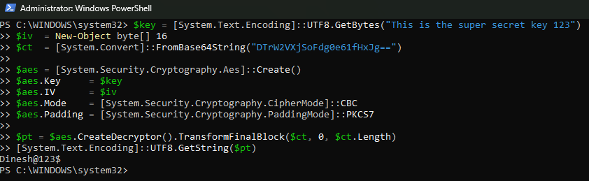
And we got it! Using the recipe found in the code, we rewrote the AES decryption in PowerShell, ran it,
and got the password of Dinesh@123$.
The AWS key we found in Chapter 5. I've mentioned a few times that we'd address the
little key we found by accident in the Broken Cryptography chapter. Here we are - it's a similar example to
the one we just did. In AndroGoat's HardCodeActivity we saw:
private final String aws_secret_access_key = "OviCwsFN...OABCw";A cloud credential hardcoded into the app's source.
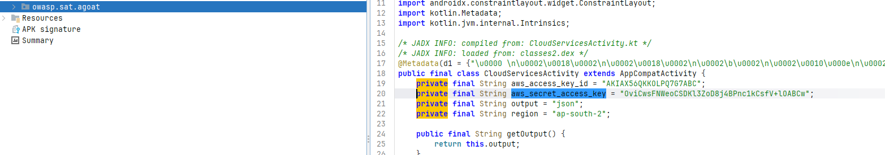
So how does this differ from InsecureBankv2? Both are M1 (Improper Credential Usage), but they fail at different points in the credential's lifecycle:
- InsecureBankv2 = a credential stored insecurely at runtime (cached to shared_prefs, "protected" by Base64 and a hardcoded-key AES). A storage failure.
- AWS key = a credential embedded into the binary at build time. A hardcoding failure - the secret ships inside the APK to every single user and attacker.
A hardcoded secret is exposed the instant we decompile. We just had to search SecretKeySpec
(or something similar) in jadx to find it.
So what did we find in Authentication & Session?
The findings, written up as report entries. As a rule, if the same weakness reproduced on both Android and iOS you'd write it up as two findings, since the evidence, code paths, and remediation differ per platform. Severities are calibrated to what each issue actually authorizes and how hard it is to reach.
| Title | Client-side biometric authentication bypass (AndroGoat) |
|---|---|
| Severity | Medium. The biometric gate is enforced entirely on the device with no cryptographic binding, so a Frida hook that reroutes the failure/cancel callbacks into the success path reaches the protected screen with no valid fingerprint. It requires attacker control of the device (root plus a running Frida), so it isn't remotely exploitable; it rises if the unlocked screen exposes data the server should re-gate, and falls toward Informational if that content is useless without a server-validated session. |
| Description | BioMetricAuthActivity uses BiometricPrompt, but onAuthenticationSucceeded only shows a Toast and dialog - no CryptoObject, no Keystore key - and authenticate(promptInfo) is called with no crypto object. Success is a cosmetic UI action, not a cryptographic unlock. |
| Impact | On a device the attacker controls, the biometric gate provides no protection; the protected screen opens after a cancelled or failed biometric. |
| Evidence | A Frida hook rerouting onAuthenticationFailed / onAuthenticationError to onAuthenticationSucceeded produced the "Authentication succeeded!" screen after tapping Cancel. |
| MASVS / MASTG | MASVS-AUTH-2 · MASTG local-authentication / biometric test cases · CWE-287 (improper authentication) |
| Mobile Top 10 | M3 - Insecure Authentication/Authorization (Family A - client-side bypass) |
| Remediation | Bind the gate to a Keystore-backed key requiring user authentication (a BiometricPrompt with a CryptoObject), so success releases a secret an attacker can't fabricate; enforce authorization server-side. See the Remediation section below. |
| Title | Login credentials stored recoverably on the device (InsecureBankv2) |
|---|---|
| Severity | Medium. The cached username and password are recoverable by anyone with access to the app sandbox (root, a backup, or forensic access): the username is only Base64-encoded, and the password is AES-encrypted with a key and IV hardcoded in the app, so both reverse offline to the real login. Not remotely exploitable on its own, but it yields working account credentials. |
| Description | On login, InsecureBankv2 caches the credentials in shared_prefs/mySharedPreferences.xml. EncryptedUsername is plain Base64; superSecurePassword is AES-256-CBC using a hardcoded key ("This is the super secret key 123") and an all-zero IV, both found in CryptoClass. |
| Impact | An attacker with device access recovers the victim's real banking username and password with no server compromise. |
| Evidence | EncryptedUsername=ZGluZXNo decoded to dinesh; superSecurePassword decrypted with the hardcoded key and zero IV back to the real password. |
| MASVS / MASTG | MASVS-STORAGE-1 · MASVS-AUTH · CWE-522 (insufficiently protected credentials) · CWE-321 (hardcoded crypto key) · CWE-329 (static IV). Overlaps M9 (storage) and M10 (crypto). |
| Mobile Top 10 | M1 - Improper Credential Usage |
| Remediation | Don't cache the password on the device; if you must, use EncryptedSharedPreferences with a Keystore-backed key - never a hardcoded key, never an all-zero IV, and never Base64 dressed up as "encryption." See the Remediation section below. |
| Title | Hardcoded cloud credential in the app binary (AndroGoat) |
|---|---|
| Severity | Low in this lab (the key is a dummy value in a public training app), but the pattern is Critical: a live AWS secret access key embedded in a shipped app grants anyone who decompiles it programmatic access to whatever the key's IAM identity allows - remotely, with no device access. |
| Description | HardCodeActivity contains a hardcoded aws_secret_access_key string literal, recoverable by decompiling the APK. |
| Impact | Anyone with the APK extracts the key with a single static search. A live key would mean full cloud-account compromise (data exfiltration, resource abuse, billing). |
| Evidence | aws_secret_access_key = "OviCwsFN..." found in owasp.sat.agoat.HardCodeActivity via a keyword search in jadx. |
| MASVS / MASTG | MASVS-STORAGE · MASVS-CODE · CWE-798 (use of hardcoded credentials) |
| Mobile Top 10 | M1 - Improper Credential Usage |
| Remediation | Never embed credentials in the binary; fetch short-lived, scoped credentials at runtime from a backend, and rotate any key that has shipped. See the Remediation section below. |
Remediation
The specific fixes for what we found, then the general controls every app should apply for M1 and M3.
For the flaws in this section:
- Biometric bypass (M3): bind the gate to the hardware. Use
BiometricPromptwith aCryptoObjectwrapping an Android Keystore key created withsetUserAuthenticationRequired(true), so a successful prompt releases a key an attacker can't fabricate and a faked callback yields nothing. Never gate on a bare boolean or a UI callback, and enforce the real authorization on the server. - Stored credentials (M1): don't cache the password at all if you can avoid it. If you must, use EncryptedSharedPreferences backed by a Keystore master key - never a hardcoded AES key, never an all-zero IV, and never Base64 dressed up as "encryption." Prefer a short-lived, server-issued token over the raw password.
- Hardcoded AWS key (M1): never embed a credential in the binary. Fetch short-lived, least-privilege credentials at runtime from your backend, and rotate any secret that has ever shipped in an APK.
General M1 (Improper Credential Usage) controls, most important first:
- Most applicable here: store secrets only in the OS-backed vault (Android Keystore / iOS Keychain), never in plain
shared_prefs, and never hardcode keys or credentials in the app. - Encoding is not encryption - never treat Base64 (or a hardcoded-key cipher) as protection.
- Transmit credentials only over TLS, never in cleartext (ties back to M5).
- Prefer short-lived, scoped, rotatable tokens over long-lived passwords held on the device.
General M3 (Insecure Authentication/Authorization) controls, most important first:
- Most applicable here: treat every client-side check as UI convenience, not a security boundary - enforce authorization server-side, and bind biometric/PIN gates to a Keystore/Keychain key requiring user presence so "success" releases a secret rather than a boolean.
- Rotate session tokens at every privilege transition (login, password change) to prevent fixation.
- Set short token expiry and enforce server-side revocation, so logout actually invalidates the session.
- Reject
alg:noneand pin the expected JWT algorithm; sign with a long random secret or asymmetric keys.
06Platform Interaction (IPC, Deep Links, WebViews)
Concept
As we know, apps live in their own sandbox and can't directly touch another app's files. So how do they cooperate? Through IPC (Inter-Process Communication). The OS provides controlled channels, and the app's manifest declares which of its components can be reached through them.
Chapter 6 was about crypto, data at rest, and who is allowed in. M4 is about the app trusting input it
shouldn't, or emitting output unsafely. On the web, input usually means form fields, headers, and cookies.
On mobile, the most interesting input arrives through Intents, deep links, exported components,
content-provider queries, and content loaded into a WebView. An exported component is basically a public
function that any other app (or a web page, if it's BROWSABLE) can call. If that entry point
lets in attacker-controlled input without validation, we get injection. That is essentially what M4 is
about.
Android - four component types and the export flag. An Android app is built from four
kinds of components, all declared in AndroidManifest.xml (we read this back in Chapter 2):
- Activities - screens.
- Services - background work.
- Broadcast Receivers - listeners for system or app events.
- Content Providers - structured data exposed over a
content://URI, usually backed by a database.
Each component is either exported or not. The flag is set two ways:
- Explicitly:
android:exported="true"or"false". - Implicitly: a component with an
<intent-filter>defaults to exported on older targets. (Since API 31 / Android 12,android:exportedis mandatory when a filter is present, but plenty of apps still target older SDKs or set it incorrectly.)
An exported component with no permission guard is an open entry point. If an Activity that shows your account details is exported, a malicious app can launch it. If a Content Provider backing the notes database is exported, any app can read (and sometimes write) that database.
iOS - URL schemes and the absence of "components". While this writeup is Android
focused, iOS is worth a mention. iOS has no exported-Activity equivalent; there is no general way for one
app to launch the screen of another. The classic IPC surface is the custom URL scheme. An app registers a
scheme like ovaa:// in its Info.plist under CFBundleURLTypes →
CFBundleURLSchemes. Any app, or web page, can then open ovaa://do/something?param=value,
and the target app's URL handler is invoked with that input, which it frequently trusts. The modern, safer
version is the Universal Link (Android's equivalent is the App Link): an https:// URL that the
OS routes into the app only after verifying a signed association file hosted on the domain. Custom schemes
have no ownership check, which is why any app can register fb:// and hijack it.
Deep links and WebViews. Two surfaces span both platforms and carry attacker-controlled data straight into the app:
- Deep links (custom scheme or App/Universal Link) - the path and query parameters are attacker-controlled. If the app uses them to pick an action, navigate, or build a request without validation, we get unintended-action triggering, parameter injection, or an open redirect.
- WebViews - an embedded browser (
WebViewon Android,WKWebView/ legacyUIWebViewon iOS). If it loads attacker-influenced URLs, or bridges page JavaScript to native code, the page becomes a foothold inside the app's sandbox.
This section focuses on MASVS-PLATFORM and the OWASP Mobile Top 10 categories M4 - Insufficient Input/Output Validation and M8 - Security Misconfiguration. Our targets:
- InsecureBankv2 - exported Activities, an exported Content Provider, and an exported Broadcast Receiver.
- AllSafe - an externally reachable deep link and an unsafe WebView.
1. Exported Activity (InsecureBankv2)
We read the decoded manifest for android:exported="true"
activities, then jump straight to a post-login screen without logging in.
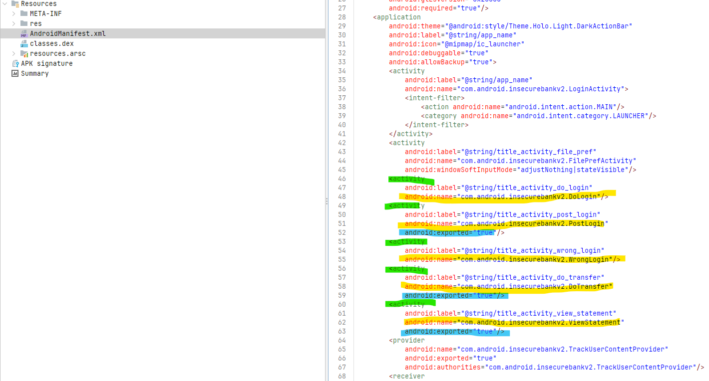
Let's break down the contents of AndroidManifest.xml quickly. Green is the activities we
will exploit, yellow is the name of each activity, and blue is android:exported="true". (Note:
there are two other M8-interesting findings in this screenshot we address in the report: android:debuggable="true"
and android:allowBackup="true".) For example, we see com.android.insecurebankv2/.PostLogin
as one of the activities marked android:exported="true".
adb shell am start -n com.android.insecurebankv2/.PostLogin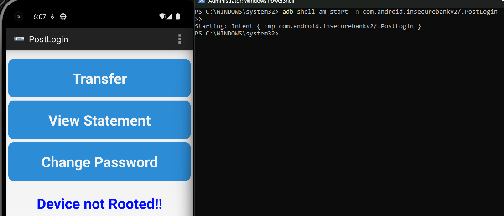
Nice. After running the command we land on the PostLogin screen with no authentication.
How did that work? The key idea is that an app is not one big locked building, it is a
row of separate rooms. Each screen in an Android app is an Activity, an independent thing the system can
start on its own. Normally we walk in the front door, LoginActivity, which we can see is the
MAIN / LAUNCHER in its intent-filter. Once login works, the app sends
us to PostLogin. As a reminder, android:exported="true" means any app (or
adb) can start that Activity directly; exported="false" (or absent with no
intent-filter) means only the app's own code can open it. A sensitive screen trusts that it's only reachable
after auth, but if it's left exported, it isn't. Breaking the command down:
adb shell= run a command on the phone.am= Activity Manager, the OS service whose job is starting components.start= tell it to start an activity.-n= "I'm naming the exact component" (package/class).
The whole thing means: "OS, start the PostLogin screen of InsecureBankv2 for me." The OS checks whether
it's exported, sees true, and opens it. If it were exported="false", we'd get a
permission denial.
adb shell runs as the special shell user (UID 2000), which Android grants
elevated privileges a normal third-party app never gets, so am start from adb can open a
component marked exported="false" that an attacker's app would be denied (even more so under
adb root, which we use here). That means "it opened from adb" proves nothing on its own. The
exported="true" line in the manifest is what proves an unprivileged app could do it too, so
that line is our evidence, not the successful command.
A stronger find. We strengthen the finding by reaching a screen that lets us do something, rather than just show a menu (though that menu is already a solid find).
adb shell am start -n com.android.insecurebankv2/.DoTransferFrom PowerShell we launched a screen that should have required authentication. When we write the report we confirm the class names, since they vary between builds.
2. Exported Content Provider (InsecureBankv2)
The process is: Exported → Dump → Error-proof → Tautology.
Step 1 - confirm the provider is exported. In AndroidManifest.xml we see it
exported as true.
Since it's exported, let's dump the provider with no auth.
adb shell content query --uri content://com.android.insecurebankv2.TrackUserContentProvider/trackeruserscontent query is a command-line tool built into Android that talks to a Content Provider
directly, the same way an app would through the ContentResolver API. Now, how did we know to add
trackerusers? It's not in the manifest. The key concept is that a content:// URI has
two parts:
content://com.android.insecurebankv2.TrackUserContentProvider / trackerusers
<----------- authority -----------> <-- path -->The authority, com.android.insecurebankv2.TrackUserContentProvider, is in the manifest (the
android:authorities= line in a previous screenshot). Paths are defined in the provider's code,
which we get from opening the provider class in jadx.
By double-clicking com.android.insecurebankv2.TrackUserContentProvider we go straight to the
decompiled class. Searching for addURI shows it declares the trackerusers path, and
the query reads from a table named names.
Step 2 - dump the provider with no auth.
This shows dinesh, which means any app can read this with no login required. We know these
credentials from earlier sections, so now let's prove injection.
Step 3 - error-based injection proof.
This error leaks the raw query, SELECT * FROM names WHERE (name=dinesh)..., because the
shell strips the quotes and SQLite reads dinesh as a column. The error is proof that the query
is concatenated. A properly parameterized provider would bind our input as a value and simply return nothing,
so it could never throw this error.
Step 4 - confirm the tautology. A tautology is a statement that is always true.
We went inside the device shell and, without typing dinesh, wrote
name='x' or '1'='1'. How did dinesh show up when we didn't write it? The whole
condition reads "the name is x OR something that's always true." Because 1=1 is always true, the
entire WHERE clause is always true for every row, so the filter becomes meaningless and the
database hands back everything. This is the classic SQLi tautology; ' OR '1'='1 is the most
famous string in web security for exactly this reason. The error proved our input reaches the SQL compiler
and is treated as SQL rather than data; the tautology proves we can control the query's logic and pull rows
we shouldn't get. (Weaponizing this into a full extraction of the credential table with UNION SELECT
is a code-injection job, so we cover it in the next section.)
3. Exported Broadcast Receiver (InsecureBankv2)
Step 1 - confirm the receiver in the manifest. (Noticing a pattern with the manifest and what we look for yet?)
It is exported as true with no permission guard, which means any app can broadcast to it.
Step 2 - read onReceive() in jadx to learn the inputs. Double-click
com.android.insecurebankv2.MyBroadCastReceiver and see what happens in onReceive().
intent.getStringExtra("...")calls read the extra keysphonenumberandnewpass.- It then changes the account password and calls
SmsManager/sendTextMessage(...)to text the new password to that phone number.
It performs a sensitive action (password change plus SMSing the credential out) based on broadcast extras whose sender it never validates.
Step 3 - set up to watch the effect, then Step 4 - fire the broadcast with attacker-chosen parameters.
adb logcat -c
adb shell am broadcast -n com.android.insecurebankv2/.MyBroadCastReceiver --es phonenumber 5556 --es newpass attackerpass
adb logcat -d | findstr /i "insecure broadcast password sms updated changed"Step 5 - confirm the side effect.
System.out: For the changepassword - phonenumber: 5556 password is: Updated Password from: Dinesh@... to: attackerpassInsecureBankv2 exports MyBroadCastReceiver with no permission guard. It changes the account
password and SMSes the new credential to a phone number, both taken from unvalidated broadcast extras, so any
app can trigger it and send the credential to an attacker-controlled number. A separate vulnerability is also
shown here: the old password is leaked to the log (insecure logging, the M9 pattern from earlier).
4. Deep Links and App Links (AllSafe)
Step 1 - confirm the scheme in AllSafe's manifest. We want the activity carrying
<action android:name="android.intent.action.VIEW"> plus <category ... BROWSABLE>
plus <data android:scheme="...">.
We note the exact URI shape we will fire: scheme allsafe, host infosecadventures,
path /congrats.
Step 2 - read the handler in jadx. Double-clicking DeepLinkTask brings us to
the challenge's code.
The handler reads the key query parameter and compares it to getString(R.string.key),
which we found back in our Recon section. On a match it reveals a hidden container and pops "Good job, you did
it!" It also Log.d's the full URI (Action: _ Data: _), which is our insecure-logging
cross-reference, right there.
Step 3 - fire the deep link from outside the app. The key value is a
hardcoded string in strings.xml (recovered in Recon), so we reuse it.
adb shell am start -W -a android.intent.action.VIEW -d "allsafe://infosecadventures/congrats?key=REDACTED-UUID"Step 4 - observe.
We get the congratulations screen, meaning we fired the deep link successfully from outside the app.
We also confirm it Log.d's the full URI. The app wrote the entire deep-link URI, including the
secret key, to logcat, where any app with log access (or anyone doing what we just did) can read it.
How it worked. The app "authorizes" us by checking our input against a secret, but the
secret is a hardcoded string baked into the APK's resources, which anyone can read, and the check runs
client-side on a device we control. So the gate is theater: an attacker reads R.string.key from
the binary, then fires allsafe://infosecadventures/congrats?key=<that key> from any web page
a victim taps, because the component is exported and BROWSABLE. Three risks converge on this one
component: M4 (input drives a gated action validated against a
non-secret), M8 (exported/BROWSABLE, reachable externally), and
insecure logging of the full URI (M9, from Recon).
5. WebView Misconfiguration (AllSafe)
This is a big one, so let's focus. AllSafe's VulnerableWebView is the file-disclosure and XSS
variant.
Step 1 - find the WebView code in AllSafe. In jadx: Source code →
infosecadventures.allsafe → challenges → VulnerableWebView.
Step 2 - read the settings that decide the exploit.
In yellow we see settings.setJavaScriptEnabled(true) and settings.setAllowFileAccess(true),
which enable JavaScript and file access. In blue we see how the URL is loaded: lambda$onCreateView$0
reads the on-screen payload box, and if URLUtil.isValidUrl(input) it calls
webView.loadUrl(input), otherwise webView.loadData(input, "text/html", "UTF-8"). This
means we fully control the content, either a URL it fetches or raw HTML it renders directly. There is no
addJavascriptInterface here, so this challenge is the file-read and XSS variant, not a native
bridge.
Step 3 - prove arbitrary JS (XSS). In the payload box, type something that isn't a valid
URL so it hits loadData and renders as live HTML:
<script>alert("XSS in AllSafe's WebView")</script>The WebView runs our script.
Step 4 - prove local file read. Because setAllowFileAccess(true) is set, a
file:// URL is a valid URL, so it hits loadUrl and renders a local file.
File access works. Now let's escalate into AllSafe's own sandbox. After checking
shared_prefs we find a file called user.xml, so let's see if
the WebView can read it.
file:///data/data/infosecadventures.allsafe/shared_prefs/user.xml<string name="password">REDACTED</string>
<string name="username">REDACTED</string>The WebView loaded file:///data/data/infosecadventures.allsafe/shared_prefs/user.xml and
rendered the app's private credentials in plaintext. That doubles as an M9 storage finding, since the
credentials sit in cleartext to begin with.
addJavascriptInterface, which hands a native object to
the page's JavaScript so a loaded page can call app code directly. None of my three targets (AllSafe,
InsecureBankv2, AndroGoat) ship one, so I could not reproduce it in this lab. I am documenting the pattern
for completeness: when a WebView calls addJavascriptInterface(obj, "Android") with JavaScript
enabled and loads attacker-controlled content, the page can run that object's methods, historically full
RCE on older devices. The finding I actually landed on AllSafe is the file-access and XSS variant above,
where setAllowFileAccess(true) let a file:// payload read the app's private
user.xml.
ArbitraryCodeExecution class that loads a DEX from
/sdcard/Download/allsafe_updater.apk with DexClassLoader and executes it. Because
external storage is world-accessible, an attacker who drops a crafted APK there gets code running in
AllSafe's process. That is genuine arbitrary code execution, but weaponizing it is a code-level exercise, so
we cover it in the next section.
So what did we find on the platform surface?
The findings written up as report entries. Severities are calibrated to what each issue actually authorizes and how hard it is to reach, not to how scary the label sounds.
| Title | Improper export of authenticated Activities (InsecureBankv2) |
|---|---|
| Severity | Medium. Post-authentication screens (PostLogin, DoTransfer, ViewStatement) are exported with no permission guard, so any installed app can launch them directly with am start, skipping the login flow. Device-local rather than remote, and it rises if a launched action screen operates without a valid session. |
| Description | The manifest marks the post-login activities android:exported="true" with no android:permission. The screens assume they are only reached after the app's own login flow. |
| Impact | Any app deep-jumps a user to the authenticated dashboard and its sensitive action screens with no credentials. |
| Evidence | adb shell am start -n com.android.insecurebankv2/.PostLogin rendered the dashboard with no login; the manifest shows exported="true" for those activities. |
| MASVS / MASTG | MASVS-PLATFORM · MASTG exported-Activity test cases · CWE-926 (improper export of components) |
| Mobile Top 10 | M8 - Security Misconfiguration (with M4) |
| Remediation | Set exported="false" unless the screen is deliberately public; guard any that must be exported with a signature-level permission; re-check authentication inside each sensitive Activity. See the Remediation section below. |
| Title | Exported Content Provider: data disclosure and SQL injection (InsecureBankv2) |
|---|---|
| Severity | Medium, rising to High once the injection is weaponized to extract the credential table (covered next section). The provider is exported with no read permission and builds its query by string concatenation, so any app reads it and can inject SQL. |
| Description | TrackUserContentProvider is exported="true" with no permission and concatenates the selection into a raw query against the backing names table instead of using bound parameters. |
| Impact | Any app reads the provider without authentication; the injectable selection allows reads beyond the intended row, and ultimately of other tables. |
| Evidence | content query dumped rows with no auth; a selection of name='dinesh' produced a SQLite error leaking SELECT * FROM names WHERE (name=dinesh); a tautology name='x' or '1'='1' returned every row. |
| MASVS / MASTG | MASVS-PLATFORM · MASTG exported-provider and SQL-injection test cases · CWE-89 (SQL injection) · CWE-926 |
| Mobile Top 10 | M8 (disclosure) with M4 (injection) |
| Remediation | Set exported="false" or guard with a permission; parameterize every query with selectionArgs and never concatenate input into SQL. See the Remediation section below. |
| Title | Exported Broadcast Receiver: unauthenticated password change and credential exfiltration (InsecureBankv2) |
|---|---|
| Severity | High. MyBroadCastReceiver is exported with no permission and performs a state-changing action (password reset) plus SMSes the credential, all from unvalidated extras, so any installed app can seize the account and exfiltrate to an attacker-chosen number. |
| Description | onReceive() reads phonenumber and newpass extras, changes the account password, and sends an SMS via SmsManager, without authenticating the sender of the broadcast. |
| Impact | Any app silently resets the victim's password to an attacker-known value and sends it out of band. The old password is additionally leaked to logcat. |
| Evidence | adb shell am broadcast -n .../.MyBroadCastReceiver --es phonenumber 5556 --es newpass attackerpass produced the logcat line Updated Password from: <old> to: attackerpass, and the SMS path engaged. |
| MASVS / MASTG | MASVS-PLATFORM · MASTG exported-receiver test cases · CWE-925 / CWE-926 (improper receiver export) · CWE-532 (log leak) |
| Mobile Top 10 | M8 with M4 (and M9 for the logged credential) |
| Remediation | Set exported="false" or require a signature permission; authenticate the request and never take a destination number or new password from untrusted extras; strip credential logging. See the Remediation section below. |
| Title | Externally reachable deep link bypasses a client-side gate and logs its secret (AllSafe) |
|---|---|
| Severity | Medium. DeepLinkTask is exported and BROWSABLE and validates the key parameter against a hardcoded resource string, so any web page can pass the gate; what it unlocks here is a lab congrats screen, but the pattern would be Critical guarding a real action. |
| Description | The handler compares the key query parameter to getString(R.string.key), a value baked into the APK's resources, and the check runs client-side. It also logs the full incoming URI. |
| Impact | An attacker reads the key from the binary and fires the deep link from any web page a victim taps, defeating the gate with no device access; the secret is additionally disclosed to logcat. |
| Evidence | adb shell am start -W -a android.intent.action.VIEW -d "allsafe://infosecadventures/congrats?key=<recovered>" produced the success state; logcat showed D ALLSAFE Action: ... Data: allsafe://...?key=.... |
| MASVS / MASTG | MASVS-PLATFORM · MASTG deep-link test cases · CWE-939 (improper URL handling) · CWE-798 (hardcoded credential) · CWE-532 (log leak) |
| Mobile Top 10 | M4 with M8 (and M9 for the logged URI) |
| Remediation | Do not gate on a client-side secret; validate and authorize deep-link input server-side; do not log request URIs; export the component only if it must be public. See the Remediation section below. |
| Title | Unsafe WebView: local file disclosure and arbitrary script execution (AllSafe) |
|---|---|
| Severity | Medium (top of range). VulnerableWebView renders attacker-supplied content with JavaScript enabled and setAllowFileAccess(true), so a file:// payload reads the app's private credential file and raw HTML executes script. Delivery is manual here, and it rises if the loaded URL can be driven from outside via an intent or deep link. |
| Description | The challenge loads the on-screen payload with loadUrl (valid URL) or loadData (raw HTML), with setJavaScriptEnabled(true) and setAllowFileAccess(true) and no allow-listing of the loaded content. |
| Impact | A supplied file:// URL reads sandbox files (we recovered plaintext credentials from user.xml); arbitrary JavaScript runs inside the app's WebView. |
| Evidence | <script>alert(...)</script> executed in the WebView; file:///data/data/infosecadventures.allsafe/shared_prefs/user.xml rendered the stored username and password. |
| MASVS / MASTG | MASVS-PLATFORM · MASTG WebView test cases (file access, untrusted content) · CWE-749 (exposed dangerous method/file) · CWE-79 (XSS) |
| Mobile Top 10 | M4 with M8 (and M9 for the cleartext credentials read) |
| Remediation | Set setAllowFileAccess(false), never render untrusted input, allow-list any loaded URL, and remove addJavascriptInterface or restrict it to trusted, app-bundled content. See the Remediation section below. |
| Title | Debuggable and backup-enabled build (InsecureBankv2) |
|---|---|
| Severity | Low. The manifest sets android:debuggable="true" and android:allowBackup="true", so a debugger can attach to the app and its private data can be pulled off the device with adb backup. |
| Description | Release-inappropriate flags left on in the manifest, expanding the attack surface around every other finding above. |
| Impact | Easier runtime tampering (debugger attach) and offline data extraction (backup) on devices without root. |
| Evidence | Both flags visible on the <application> element in AndroidManifest.xml. |
| MASVS / MASTG | MASVS-PLATFORM / MASVS-RESILIENCE · CWE-489 (active debug code) · CWE-530 (exposed backup) |
| Mobile Top 10 | M8 - Security Misconfiguration |
| Remediation | Ship release builds with debuggable="false"; set allowBackup="false" or exclude sensitive data via backup rules. See the Remediation section below. |
Remediation
The specific fixes for what we found, then the general controls every app should apply for M4 and M8.
For the flaws in this section:
- Exported activities (M8): set
exported="false"on every screen that isn't deliberately public, guard the rest with asignature-level permission, and re-check the session inside each sensitive Activity instead of trusting the navigation flow. - Exported content provider (M8/M4): don't export the provider unless another app genuinely needs it, and parameterize every query with bound
selectionArgsso input can never be compiled as SQL. - Exported broadcast receiver (M8/M4): stop exporting it or require a
signaturepermission, authenticate the request, and never take a destination phone number or new password from untrusted extras. Remove the credential from the log entirely. - Deep link gate (M4): never authorize against a client-side secret; validate and allow-list the parameters and enforce the real check server-side, and stop logging request URIs.
- Unsafe WebView (M4): disable file access (
setAllowFileAccess(false)and the file-URL variants), never render caller-supplied content, allow-list any URL you load, and removeaddJavascriptInterfaceor expose only a minimal annotated interface to trusted content. - Debuggable / backup (M8): ship with
debuggable="false"andallowBackup="false"(or explicit backup rules that exclude sensitive data).
General M4 (Insufficient Input/Output Validation) controls, most important first:
- Most applicable here: treat every Intent, deep-link parameter, and WebView-loaded URL as attacker-controlled input; validate and allow-list it at the boundary, and keep the sink unreachable from outside unless it must be.
- Use parameterized queries everywhere; never concatenate input into SQL, file paths, or shell strings.
- In WebViews, disable JavaScript and file access unless required, and only ever load trusted, app-bundled content.
- Enforce the real authorization on the server; a client-side check is UI convenience, not a security boundary.
General M8 (Security Misconfiguration) controls, most important first:
- Most applicable here: export nothing by default; set
android:exported="false"on every component that other apps don't need, and guard the ones that must be public with asignature-level permission. - Strip debug configuration from release builds (
debuggable="false", no verbose logging). - Disable backup of sensitive data (
allowBackup="false"or backup rules). - Prefer App/Universal Links (verified domain association) over raw custom schemes for anything sensitive.
Chapter Summary
We showed five ways to walk through the doors an app opens to the rest of the device, all on our own lab targets in place of the handbook's DIVA and OVAA:
- Exported Activity (InsecureBankv2) - launched the authenticated dashboard and a transfer screen with
am start, no login. - Exported Content Provider (InsecureBankv2) - dumped a table with no auth via
content query, then proved SQL injection with an error leak and a tautology. - Exported Broadcast Receiver (InsecureBankv2) - reset the account password and exfiltrated the credential over SMS with a single
am broadcast. - Deep Link (AllSafe) - passed a client-side gate from outside the app using a hardcoded key, and confirmed the secret URI is logged.
- Unsafe WebView (AllSafe) - read the app's private
user.xmlcredentials with afile://payload and executed arbitrary JavaScript.
The throughline: an exported component with no permission guard, or a WebView that trusts what it loads, is an open door. The manifest is where you find the doors, and the code is where you learn what walking through each one does.
07Code-Level Bugs & Injection
Concept
When we talk about injection bugs, they usually have the same form:
- A source - where our input goes in.
- A sink - where that input gets treated as a query, a path, or code.
- The missing validation between those two.
When an app pastes our raw input into that sink, we can break out of the spot we were given and change what the entire operation does. On the web, the sink is usually a remote SQL server. On mobile, the sinks are local and live inside the app itself: an SQLite database, a content provider, a file-path builder, an Intent, and a WebView.
In the previous chapter we covered what happens when that "door" is left open (exported components). This
chapter covers what happens once we are through the door. The same 1=1 logic used in web SQLi,
aimed at a local database and a content provider, plus navigating the app's sandbox and eventually out of it
with ../ path traversal.
1. Local SQL Injection (AllSafe)
Let's navigate to AllSafe's SQL Injection challenge to practice our first exploit.
AllSafe already tells us we don't need reverse engineering, so using the login portal in the challenge we can attempt our SQL injection.
Step 1 - open the challenge in jadx. We could just throw every trick we know at the box
from the start, but we save time (and get proof of the vulnerability) by reading the code first. We want a
rawQuery / query( built by string concatenation. rawQuery (and
execSQL) runs a raw SQL string we assemble ourselves. That is our dangerous sink.
Step 2 - find the string and analyze how the app filters queries. Here is the useful line:
$db.rawQuery("select * from user where username = '" + $username.getText() + "' and password = '" + this$0.md5(...) + "'", null);We note the table name and whether our input sits inside single quotes. The important part:
... username = '" + $username.getText() + "' ...This is our injection point. Our $username.getText() is pasted straight between single quotes
with no binding, so a ' in our input breaks out of the string and the rest is read as pure SQL.
- The table is
user, and it readsgetString(1)as username andgetString(2)as password. The columns are (id,username,password). - The password field is MD5-hashed before it is inserted (
this$0.md5()), so we can't cleanly inject through password. That makes the username field our injectable one.
Step 3 - craft our payload based on that assessment. If we type ' OR '1'='1,
the query becomes:
... where username = '' OR '1'='1' and password = '<hash>'AND binds tighter than OR, so that reads as "the username is empty, OR (1=1 AND
password matches)." We would only get rows whose password hash matches, so we have to kill the trailing
password condition with a comment. In the username box we enter:
' OR '1'='1' -- (Note the space after --.) This makes the query:
... where username = '' OR '1'='1' -- ' and password = '<hash>'The -- comments out everything after it, so the password check is gone and the
OR '1'='1' returns every row in user. The password box can be anything.
Step 4 - run the payload.
Our query went through, and the message the app spat out has the credentials for an admin and
an unsalted MD5 hash that reverses back to admin. (We can log the unsalted MD5 hash as a bonus
M10 finding, a nod to our Broken Cryptography chapter.) We can
also confirm it by opening the database itself and reading the credentials directly.
This is a classic SQL Injection (M4) finding. The root cause is
the username being concatenated into a rawQuery.
2. Content-provider full extraction (InsecureBankv2)
In Chapter 7 we identified that the provider is injectable. Now we exploit that into a full database extraction.
Step 0 - recall the query shape. From the previous chapter, the provider builds
SELECT * FROM names WHERE (<your input>) ORDER BY name. Two things shape every payload:
- The projection is
*onnames, which is 2 columns (id,name), so anyUNION SELECTmust also return 2 columns. - Our input sits inside parentheses with a trailing
ORDER BY, so we close the parenthesis and comment the rest.
Step 1 - drop into the device shell.
adb shellStep 2 - confirm the column count and the injection point with a dummy UNION. If it
returns a row showing 1 and 2, we have confirmed 2 columns and that the break-out
works:
content query --uri content://com.android.insecurebankv2.TrackUserContentProvider/trackerusers --where "1=0) UNION SELECT 1,2 --"(The 1=0 kills the real rows so we only see our injected row; the ) closes the
wrapper paren; -- comments the trailing ) ORDER BY name.)
Row: 0 id=1, name=2 confirms it: 2 columns, and our injected literals came back in the
id/name slots. The UNION break-out works and the column count matches.
Step 3 - dump the entire schema using SQLite's metadata table (sqlite_master
is SQLite's version of web's information_schema). This lists every table and its CREATE
statement, proving we can read beyond the intended names table:
content query --uri content://com.android.insecurebankv2.TrackUserContentProvider/trackerusers --where "1=0) UNION SELECT name, sql FROM sqlite_master --"android_metadata (locale TEXT)- SQLite housekeeping, not app data.names (id INTEGER PRIMARY KEY AUTOINCREMENT, name TEXT NOT NULL)- the one real app table.sqlite_sequence(name,seq)- SQLite's autoincrement bookkeeping, also internal.
This proves we can read arbitrary tables, not just the one the provider intended to expose. (A full schema dump naturally includes the SQLite internals above.)
Step 4 - swap in the real column and table names from Step 3 (table names,
columns id and name):
content query --uri content://com.android.insecurebankv2.TrackUserContentProvider/trackerusers --where "1=0) UNION SELECT id, name FROM names --"To make the arbitrary read obvious, we can concatenate our own text into the output:
content query --uri content://com.android.insecurebankv2.TrackUserContentProvider/trackerusers --where "1=0) UNION SELECT id, 'table='||name FROM names --"SQLite uses || for concatenation. This prints table=dinesh rows, making it
obvious the second column is attacker-shaped output, not the provider's normal response.
3. Insecure Deserialization (AllSafe)
First, what is deserialization? Serialization
is taking a live object (data in the app's memory, like a User with a role, password, and so on)
and flattening it into a stream of bytes we can save to a file. Deserialization is the reverse: turning those
bytes back into a live object.
AllSafe's challenge lets us prove insecure deserialization:
- Save - a button that makes a
Userwithrole = ROLE_AUTHOR, serializes it, and writes it touser.dat. - Load - a button that reads
user.datback into aUser, then checks if our role isEDITOR. If it is, access is granted.
The app trusts the role stored in the file, even though the file lives on external storage that we can read
and write. So we edit the file, change AUTHOR to EDITOR, and when the app
deserializes it, it thinks we're an editor. It never signs the file and never re-checks with a server. It just
trusts the bytes and reads them back believing whatever they say. Comparing it to a website, it's as if we
took a cookie with role=user, edited it to role=admin, and the server believed us.
Analyze the code. Step 1 - find the class and confirm serialization. Open the source for
ObjectSerialization in jadx. Serialization sinks always show these tells:
- Writing:
ObjectOutputStream+writeObject(...) - Reading:
ObjectInputStream+readObject(...) - A class marked
implements Serializable
All of the above are present, confirming serialization.
Step 2 - find where the file goes. Where the file lives decides exploitability. In
onCreateView, read the path line:
final String path = requireActivity().getExternalFilesDir(null) + "/user.dat";getExternalFilesDir- external storage. Anyone (or any app with storage access) can read or write it. If it were internal only (getFilesDir) the attack would be harder.user.datis the file name (small detail, but useful to note).
Step 3 - read the Save handler (lambda$onCreateView$0).
User user = new User(username.getText()..., password.getText()...);
... oos.writeObject(user);It builds the object and serializes it, but never signs, encrypts, or checksums it. Just raw bytes.
Step 4 - open the User class.
- There is a
rolefield, and it defaults toROLE_AUTHOR. - The access decision is made entirely on the
rolefield of the object deserialized from our file. No server check or signature anywhere. - The value it wants is
ROLE_EDITOR. That is our target.
Prove insecure deserialization. From our assessment: the file is on storage we control, it
holds a role, and the app trusts that role on load. So we change ROLE_AUTHOR to
ROLE_EDITOR in user.dat and reload.
Step 1 - save credentials through the app.
We enter anthony and sudohi and hit Save. This writes user.dat (role
ROLE_AUTHOR) to external storage.
Step 2 - pull user.dat to the desktop.
adb pull /sdcard/Android/data/infosecadventures.allsafe/files/user.dat .Step 3 - change AUTHOR to EDITOR. Python here, but any editor works (PowerShell, a hex editor). Both strings are 11 characters, so the swap keeps the serialized length fields valid.
python -c "d=open('user.dat','rb').read().replace(b'ROLE_AUTHOR',b'ROLE_EDITOR');open('user.dat','wb').write(d)"This confirms it was successfully changed to EDITOR.
Step 4 - push it back.
Step 5 - confirm it landed with the role intact.
Step 6 - trigger it. We hit Load, expecting a "Good job!" and a Toast, and... nothing happened. So something was wrong with our approach. Let's clear the log, hit Load again, and watch what the app does:
adb logcat -c
adb logcat -d | findstr /i "allsafe Exception Serial ROLE"EACCES (Permission denied) plus a SELinux avc: denied { read }. Our push worked,
but the app can't read the file we pushed.
Android/data/<pkg> folder gets per-app SELinux categories
(c174,c256,c512,c768). A file the app creates inherits those categories, so the app can read
it. A file adb push creates gets a generic storage_file label without those
categories, so SELinux blocks the app from reading it. Our role edit was fine; the problem was the file's
label, because we created a new file instead of modifying the app's own.
The fix is to write our bytes into the file the app already owns so the label stays preserved, instead of pushing a fresh file over the top.
Fix Step 1 - remove the mislabeled file.
adb shell "rm /storage/emulated/0/Android/data/infosecadventures.allsafe/files/user.dat"Fix Step 2 - Save again in the app (different creds this time, to confirm it's a new file).
Fix Step 3 - confirm the correct labels are on the file.
adb shell "ls -Z /storage/emulated/0/Android/data/infosecadventures.allsafe/files/"The categories are there this time. When we hit Load we now get a proper error message, which means the
app is reading the file with the correct categories and denying us based on the AUTHOR role.
Good.
Fix Step 4 - overwrite the contents in place and push. Because cat > existingfile
writes into the file the app created (same inode, same label), the app can still read it.
adb push "$env:USERPROFILE\Desktop\user.dat" /data/local/tmp/mod.dat
adb shell "cat /data/local/tmp/mod.dat > /storage/emulated/0/Android/data/infosecadventures.allsafe/files/user.dat"(We overwrite with the edited file from earlier, so a successful load shows our original tampered credentials.)
Fix Step 5 - hit Load.
Success. The Toast shows role='ROLE_EDITOR', and note it shows our tampered
anthony identity, not the credentials we typed on the last Save. That is the vulnerability stated
by the app itself: the identity and role came entirely from the file we controlled, not from anything we
logged in as. Load reads the file, never the input boxes.
Making mistakes really does solidify these concepts. We saw that pushing a fresh user.dat
created a new file without the SELinux categories the app uses to read it, which is why the fix had to
recreate and overwrite in place. We would not have learned about those categories were it not for that little
mistake.
A note on path traversal
The handbook's DIVA lab has a screen that reads a file from a path we type with no checks, so
../ climbs out of the app and reads arbitrary files. None of my three targets (AllSafe,
InsecureBankv2, AndroGoat) expose that sink. I searched their code for file reads built from user input and
found none, so I could not reproduce classic path traversal here. I
am documenting the pattern for completeness. It is the mobile version of web LFI and directory traversal: the
same bug, but the sink is a local file API instead of a web server, and the input arrives from a text field,
an intent, or a deep link. A payload like ../../../../etc/hosts would read a system file outside
the sandbox, and ../databases/x.db or ../shared_prefs/y.xml would pivot to the
app's own secrets. The fix is canonicalize then allowlist: resolve the final path and confirm it still sits
inside the intended directory. I did demonstrate the same underlying primitive, arbitrary file read from
unvalidated input, in the Platform chapter, where AllSafe's WebView loaded
file:///data/data/infosecadventures.allsafe/shared_prefs/user.xml and rendered the app's private
credentials.
So what did we find in Code-Level Bugs?
The findings written up as report entries, with severity calibrated to reach (local versus cross-app) rather than to how alarming the label sounds.
| Title | SQL injection in the local login query (AllSafe) |
|---|---|
| Severity | Medium. The login query is built by string concatenation, so a payload in the username field bypasses authentication and dumps every row of the user table. Local (the attacker must be at the screen), which keeps it out of High, but it fully defeats the login and discloses all stored credentials. |
| Description | The SQL Injection challenge runs rawQuery("select * from user where username = '" + input + "' and password = '" + md5(...) + "'", null). The username is concatenated unescaped, so ' OR '1'='1' -- comments out the password check and returns all rows. |
| Impact | Authentication bypass plus disclosure of every username and password hash in the table. |
| Evidence | The rawQuery line in jadx; the payload returning the admin row; and a direct sqlite3 read of the user table confirming the full contents. |
| MASVS / MASTG | MASVS-CODE · MASTG data-validation / SQL-injection tests · CWE-89 (SQL injection) |
| Mobile Top 10 | M4 - Insufficient Input/Output Validation |
| Remediation | Use parameterized queries: rawQuery("... WHERE username = ?", new String[]{input}), never concatenation. See the Remediation section below. |
| Title | Unsalted MD5 password hashing (AllSafe) |
|---|---|
| Severity | Low on its own, but it compounds the SQLi above: passwords are stored as fast, unsalted MD5, so the hashes dumped by the injection crack instantly (this one is trivially admin). |
| Description | The challenge hashes the password with unsalted MD5 before storing/comparing it. MD5 is fast and unsalted, so recovered hashes fall to rainbow tables or brute force. |
| Impact | Any password hash recovered (for example via the SQLi) is recovered in plaintext almost immediately. |
| Evidence | The dumped hash 21232f... is the well-known MD5 of admin. |
| MASVS / MASTG | MASVS-CRYPTO · CWE-916 (weak password hash) · CWE-759 (unsalted hash) |
| Mobile Top 10 | M10 - Insufficient Cryptography |
| Remediation | Never store passwords on the client; where hashing is needed, use a slow, salted KDF (PBKDF2, scrypt, Argon2). See the Remediation section below. |
| Title | SQL injection in an exported content provider (InsecureBankv2) |
|---|---|
| Severity | High as a capability. The exported provider concatenates the selection into its query, so a UNION injection reads arbitrary tables in the database with no permission, cross-app. Concrete impact here is limited because the exposed database only holds a low-value names table, but the vulnerability itself is cross-app arbitrary read. |
| Description | TrackUserContentProvider builds SELECT * FROM names WHERE (<selection>) ORDER BY name by concatenation. Closing the paren and appending a UNION SELECT against sqlite_master enumerates the whole schema; a UNION against any table reads it. |
| Impact | Any zero-permission app on the device can enumerate and read the provider's entire database, not just the intended table. |
| Evidence | The dummy UNION (1=0) UNION SELECT 1,2 --) confirming the break-out; the sqlite_master dump listing every table; and the targeted FROM names read. |
| MASVS / MASTG | MASVS-CODE / MASVS-PLATFORM · MASTG provider-injection tests · CWE-89 · CWE-926 (improper export) |
| Mobile Top 10 | M4 with M8 (exported) and M6 (data exposure) |
| Remediation | Parameterize the provider query with bound arguments, allow-list the selection and projection, and don't export the provider unless required. See the Remediation section below. |
| Title | Insecure deserialization enabling privilege escalation (AllSafe) |
|---|---|
| Severity | Medium. The app makes an authorization decision from the role field of an object it deserializes from a user-writable file, with no signing or server check. Tampering the file escalates author to editor. Local (needs storage access), and worse if the object drove a real privilege or a gadget chain. |
| Description | ObjectSerialization writes a User object (role ROLE_AUTHOR) to getExternalFilesDir()/user.dat, then on Load deserializes it and grants access if role.equals("ROLE_EDITOR"). The role is trusted straight from the file. |
| Impact | An attacker who can write the file (external storage) sets any role and is trusted as that role on load, bypassing the intended author/editor control. |
| Evidence | Flipping ROLE_AUTHOR to ROLE_EDITOR in user.dat (overwriting the app-owned file in place to keep its SELinux label) produced "Good job!" and a Toast showing role='ROLE_EDITOR'. |
| MASVS / MASTG | MASVS-CODE / MASVS-STORAGE · CWE-502 (deserialization of untrusted data) · CWE-565 (reliance on untrusted inputs) |
| Mobile Top 10 | M4 with M8 |
| Remediation | Never make trust decisions from client-controlled serialized data; validate and sign it, store role/authorization server-side, and keep sensitive objects off external storage. See the Remediation section below. |
Remediation
The specific fixes for what we found, then the general controls every app should apply for M4.
For the flaws in this section:
- SQL injection, local and provider (M4): use parameterized queries everywhere. Bind input as
?placeholders withselectionArgsand never concatenate it into the SQL string. For the provider, also allow-list the selection and projection and stop exporting it unless another app truly needs it. - Unsalted MD5 (M10): don't store passwords on the client. Where a hash is genuinely needed, use a slow, salted password KDF (PBKDF2, scrypt, Argon2) with a random per-user salt, and drop MD5/SHA-1 entirely.
- Insecure deserialization (M4): never make an authorization decision from a client-controlled serialized object. Enforce role and access server-side; if you must persist state locally, sign or encrypt it with a Keystore-backed key and keep it off external storage.
General M4 (Insufficient Input/Output Validation) controls, most important first:
- Most applicable here: treat every input reaching a query, a path, or a deserializer as attacker-controlled, and bind or validate it at the boundary rather than concatenating it into the sink.
- Use parameterized queries for all SQL; never build queries, file paths, or shell strings from raw input.
- Canonicalize then allow-list any path built from input, and reject
..and absolute paths. - Enforce real authorization on the server; a client-side check on client-controlled data is not a security boundary.
Chapter Summary
We walked through the injection family, with the sinks living inside the app rather than on a remote server:
- Local SQL injection (AllSafe) - a concatenated
rawQuerylet' OR '1'='1' --bypass the login and dump every user, with the passwords stored as crackable unsalted MD5. - Content-provider extraction (InsecureBankv2) - a UNION against
sqlite_masterturned Chapter 7's "it's injectable" into a full, cross-app schema and table read. - Insecure deserialization (AllSafe) - tampering a serialized
Userfile on external storage escalated author to editor, because the app trusted a role it read straight from bytes we control. - Path traversal - documented as the pattern, since none of our targets expose the sink; the same arbitrary-file-read primitive was shown via the WebView in the Platform chapter.
The throughline is one sentence: the app took input and used it in a sensitive operation without validating it. Name the source, the sink, and the missing validation, and the finding writes itself.
08Reverse Engineering & Anti-Tamper
[ Frida instrumentation, root/tamper detection and bypass, obfuscation, patching. ]
| Title | [ finding name ] |
|---|---|
| Severity | [ ... ] |
| Description | [ ... ] |
| Impact | [ ... ] |
| Evidence | [ ... ] |
| MASTG | [ ... ] |
| Mobile Top 10 | [ ... ] |
| Remediation | [ ... ] |